فهرست مطالب
- مقدمه
- مهارت عامل چیست (و چگونه نخستیناش را بسازیم)
- چرا مهارتهای عامل اینقدر سریع فراگیر شدند؟
- ارزیابی مهارتها
- از نمونهٔ اولیه تا تولید
- دربارهٔ فرامهارتها و مهارتهای خودبهبودده
- ترکیب و بستهبندی مهارتها
- چگونه از میان صدها مهارت موجود انتخاب کنیم
- نتیجهگیری
- پیوست الف — برگهٔ تقلب عملی
- پیوست ب — مطالعهٔ موردی: تخصص حوزه بهمثابه کد
مهارتهای (skill) عامل هر عامل عمومی را بهاقتضا به متخصص بدل میکنند. بدون تورم زمینه. قابلحمل و سبک.
۱.مقدمه
مهارتهای عامل راهیاند برای تجهیز عامل شما به دانش و زمینهٔ سازمانی. یک مهارت عامل، پوشهای است شامل
فایل SKILL.md، بههمراه دایرکتوریهای scripts/، references/ و
assets/. بخش ۲ ساختار را بهتفصیل پوشش میدهد.
مهارتهای عامل دارند به استاندارد قابلیت حمل میانسکویی بدل میشوند. اما چرا این سرعت پذیرش ناگهانی؟ باور ما این است که مهارتهای عامل چهار نقطهٔ اصلی اصطکاک در توسعهٔ عاملهای هوش مصنوعی را هدف میگیرند:
- دستور (instruction) زیاد، نتیجهٔ بدتر. ریختن هر دستوری که به ذهنتان میرسد در یک پرامپت (prompt) سامانهٔ واحد، ناگزیر عملکرد مدل زبانی بزرگ را تنزل (degradation) میدهد؛ مشکلی که با نام پوسیدگی زمینه (Context rot) شناخته میشود. مهارتها این را با بارگذاری انحصاراً هنگام نیاز حل میکنند. بخش ۵ پژوهش پشت این موضوع را باز میکند.
- دانستن «چگونه»، نه فقط دانستن «چه». مدلهای زبانی از پیش معادلهای معقولی برای بهخاطرسپردن آنچه رخ داد (حافظهٔ رویدادی) و بهخاطرسپردن واقعیتها (حافظهٔ معنایی) دارند. آنچه نداشتهاند، راهی برای بهخاطرسپردن چگونگی انجام کارها بهصورت گامبهگام بوده است، که نامش حافظهٔ رویهای (Procedural memory) است. مهارتهای عامل را میتوان نخستین اولیهٔ باورپذیر حافظهٔ رویهای برای عاملهای مدلزبانی دانست.
- اضافهبار چندعاملی. اکوسیستم از سامانههای چندعاملیِ پیچیدهای پر شده بود که ساخت و نگهداریشان بهشکل بدنامی دشوار است. این سامانهها هنوز برای برخی کارها ضروریاند، اما مهارتها اجازه میدهند یک عامل عمومی بهروانی در نقشهای تخصصی متعدد فرو برود. بخش ۳ این استدلال را با یک نمونهٔ کارشده بسط میدهد.
- قابلیت حمل. پوشهای با یک فایل مارکداون، اولیهای بهطرز چشمگیری سبک است. هر عاملی که به فایلسیستم دسترسی دارد میتواند از آنها استفاده کند، و همین آنها را در چشماندازی چندفروشنده کاملاً قابلحمل میسازد.
در این مقاله دو نوع مخاطب را در نظر داریم: سازندگان (کسانی که از مهارتها استفاده میکنند) و توسعهدهندگان (کسانی که آنها را میسازند، نسخهبندی و مدیریت میکنند). ابتدا بهآرامی مرور میکنیم که مهارت چیست و چطور به کارش ببریم (بخشهای ۲ و ۳) و سپس به موضوعهای پیچیدهتر توسعهدهندگان میپردازیم: ارزیابی، آمادگی تولید، فرامهارتها (Meta-skill) و ترکیبپذیری (بخشهای ۴ تا ۸).
۲.مهارت عامل چیست (و چگونه نخستیناش را بسازیم)
مهارتهای عامل اولیهایاند برای دادن صلاحیت تخصصیِ بهاقتضا به یک عامل عمومی. بله، یک مهارت میتواند بهسادگی یک فایل مارکداون باشد، اما لازم نیست همانجا متوقف شود، و پارادایم پشت آن کاملاً نوآورانه است.
امروز شاهد پیدایش مهارتهای عامل از دو الگوی متمایز هستیم:
مسیر (trajectory) نخست را متخصصان موضوعی پیش میبرند، کسانی که دانش نهادیشان از پیش جایی نوشته شده است. به افسر انطباقی با یک دفترچهٔ راهنمای سیصفحهای فکر کنید، یا مدیر منابع انسانی با راهنماهای آموزش تازهواردها. هیچکدام لازم نیست برنامهنویسی یاد بگیرند تا مهارتی بنویسند و به کارش ببرند. آنها محتوا را از پیش دارند؛ تنها کار باقیمانده ترجمهٔ آن به قالبی است که عامل بتواند هوشمندانه به کارش ببرد.
مسیر دوم شامل توسعهدهندگانی است که گردشکارهای عاملی یا کدشده را در مهارت میپیچند. اگر عاملی کاری غیرپیشپاافتاده و تکرارشونده را با موفقیت اجرا کند، نمیخواهید دفعهٔ بعد ناچار شود فرایند را از صفر کشف کند. در عوض میخواهید عامل از همان اجرای موفق یک مهارت بسازد. خلاصه اینکه الگویی در حال پیدایش است: هر چیزی که یک گردشکار (workflow) خوب و قابلاستفادهٔ مجدد باشد، به مهارت بدل میشود؛ و لازم نیست خودتان بنویسیدش — عامل مینویسد، شما بازبینی میکنید. این از همین حالا قلمرو فرامهارتهاست که اینجا بهآرامی معرفیاش میکنیم و در بخش ۶ عمیق میشویم.
هر دو گروه یک مصنوع یکسان تولید میکنند: پوشهٔ مهارتی که با اولیهٔ SKILL.md لنگر انداخته است.
اما مسیر رسیدن به آن متفاوت است.
ساختار مهارت و افشای تدریجی
پیش از پرداختن به مسیرهای مختلف، بیایید ساختار مهارت را مرور کنیم. هر مهارت در دایرکتوری خودش زندگی
میکند و باید یک SKILL.md داشته باشد. برای دیدن ساختار کامل و متعارف، به یک نمونهٔ عملی نگاه کنیم.
در زیر پوشهای نمایشی برای مهارتی میبینید که برای آمادهسازی روزانهٔ یک کافه طراحی شده است
(به یاد داشته باشید تنها فایل اجباری SKILL.md است؛ بقیه اختیاریاند):
cafe-preparation/
├── SKILL.md # Required: metadata + instructions
├── scripts/ # Optional: executable code (any language)
│ ├── calc_quantities.py # Estimates lattes, croissants, etc.
│ └── convert_to_ingredients.py # Converts drinks and pastries into ...
├── references/ # Optional: supplementary context
│ ├── menu_and_recipes.md # Matcha latte: 3g powder, 200ml ...
│ └── minimums.md # Always prep for at least 40 lattes ...
└── assets/ # Optional: templates, configs, schemas
├── prep_sheet_template.md # The final layout for the kitchen staff
└── shopping_list_template.md # The layout for vendor orderingقطعهٔ ۱: درخت دایرکتوری که چیدمان استاندارد و طراحی افشای تدریجی (Progressive disclosure) مهارت آمادهسازی کافه را نشان میدهد.
بخش نوآورانهٔ ماجرا، افشای تدریجی است. مهارتها در سه سطح بار میشوند:
- فراداده (نام و توصیف) همیشه در زمینهٔ عامل حاضر است.
- بدنهٔ
SKILL.mdفقط زمانی بار میشود که مهارت فعال شود. - منابع همراه دقیقاً هنگام نیاز بار میشوند (و اسکریپتها اجرا میشوند بیآنکه هرگز پنجرهٔ توکن (token) را آلوده کنند).
این یعنی میتوانید صد مهارت نصبشده داشته باشید و در هر نوبت (turn) فقط هزینهٔ ناچیز فرادادهٔ آنها را بپردازید. حالا عملی شویم و ببینیم چطور یکی میسازیم.
مسیر الف: ترجمهٔ آنچه از پیش میدانید
قالب حداقلی SKILL.md در پیوست الف آمده است و میتوانید مستقیم کپیاش کنید. بخشی که ارزش دارد
اول رویش تمرکز کنید، پیشانینوشت YAML است، چون ماشهٔ فعالسازی است:
---
name: cafe-preparation
description: |
Calculates daily ingredient needs and generates prep sheets for cafe operations.
Use when the user asks to estimate daily quantities, convert drinks to
ingredients, or generate shopping lists.
Do NOT use for employee shift scheduling or financial accounting.
---قطعهٔ ۲: پیکربندی پیشانینوشت YAML برای مهارت آمادهسازی کافه.
دو چیز هست که ارزش دارد از همان ابتدا درست انجام شوند: نامگذاری و میدان توصیف.
نامگذاری. هنگام نامگذاری، بدیهی و کسلکننده باشید: برای دایرکتوریها از snake_case استفاده کنید (مثلاً bigquery_ingestion)، برای نام مهارتها از kebab-case (مثلاً pdf-processing)، و شکل مصدری را ترجیح دهید مانند managing-databases. از نامهای عمومی مانند utils یا tools بپرهیزید و هر اصطلاح داخلی سازمان را حذف کنید.
توصیف. این، الگوریتم مسیریابی (routing) شماست. تنها چیزی است که مدل میبیند تا تصمیم بگیرد مهارت عامل (Agent Skill) را بار کند یا نه. بگویید چه میکند، کلیدواژههای محرک (trigger) را جلو بیندازید، اگر مدل کمفعالسازی میکند سمج باشید، و صریحاً بگویید برای چه کاری نیست.
پس از نوشتن پیشنویس SKILL.md، بقیهٔ پوشه را میسازید. اینجاست که افشای تدریجی شروع به
پرداخت میکند. هر چیزی که لازم نیست در بدنهٔ SKILL.md باشد، جای دیگری میرود:
- اسکریپتها. کار قطعی (deterministic) (تجزیهٔ خروجیها، ریاضیات، قالببندی) در
scripts/زندگی میکند. مدل تصمیم میگیرد چه کند؛ اسکریپت کار سنگین را انجام میدهد. - مراجع. دانشی که فقط پس از اجرای مهارت مرتبط میشود (اصول حوزه، تعریفها، رسیدگی به حالتهای مرزی) در
references/میماند و هنگام نیاز بار میشود. - داراییها. قالبها و اسکیماها (schema) در
assets/جای میگیرند.
SKILL.md دارد بلند میشود، پاراگراف بعدی احتمالاً به references/ تعلق دارد، نه به بدنه.
مسیر ب: تبلور آنچه عامل همین حالا انجام داد
مسیر دوم از سر دیگر شروع میشود. بهجای ترجمهٔ چیزی که از پیش دارید، دارید چیزی را متبلور میکنید که عامل همین حالا انجام داده است. عامل کاری را با موفقیت تمام کرد. شما متوجه شدید که گردشکار قابلاستفادهٔ مجدد است. میخواهید نمونهٔ بعدی آن نوع کار از آنچه همین حالا آموخته شد بهره ببرد.
این همان قلمرو فرامهارتهاست: مهارتهایی که کارشان گرفتن یا بهبود مهارتهای دیگر است. ابزارهایی مثل
سازندهٔ مهارت آنتروپیک، عامل هرمسِ Nous Research، و الگوی
مهارتهای خودبهبوددهٔ awesome-llm-apps همگی از این گردشکار پشتیبانی میکنند.
عامل یک مسیر موفق را تماشا میکند و پیشنویس SKILL.md پیشنهاد میدهد.
شما بهجای نوشتن، بازبینی میکنید.
آزمودنش و اینکه امروز چطور مهارتها را نصب میکنیم
وقتی پوشه آماده شد (چه خودتان نوشته باشیدش، چه عاملی برایتان پیشنویس کرده باشد)، وقت آزمودن است. آن را در جای درستِ ابزار (tool) خودتان بیندازید، عامل را دوباره راه بیندازید و با یک درخواست طبیعی بیازماییدش. رد اجرا (trace) را تماشا کنید تا تأیید شود مهارت واقعاً فعال شده است. سپس درخواستی را امتحان کنید که نباید مهارت را فعال کند و تأیید کنید که ساکت میماند.
اما «جای درست» دقیقاً کجاست؟
اینجا ماجرا کمی ظریف میشود، و این یکی از معایب محبوبیت انفجاری مهارتهاست. هر عامل یا ابزار کدنویسی روی همین قالب همگرا شده، اما هرکدام کمی جای متفاوتی دنبالش میگردند. بهطور کلی، امروز سه پارادایم برای تعامل و نصب مهارتها وجود دارد:
-
انداختن فایل (عاملهای کدنویسی و خط فرمان): برای محیطهای محلی، الگو فایلمحور است؛
پوشهٔ مهارت را در یک دایرکتوری مخفی مشخص میاندازید یا نصب میکنید و عامل برش میدارد. هرچند قراردادی
بسیار خوشایند و میانابزاری حول یک پوشهٔ مشترک در ریشهٔ پروژه در حال شکلگیری است، بسیاری از ابزارها
همچنان از مسیرهای اختصاصی خودشان محافظت میکنند.
نکتهٔ حرفهای: اگر میان چند ابزار خط فرمان و محیط توسعه جابهجا میشوید، مدیرهای جامعه میتوانند بهطور خودکار کتابخانهٔ مرکزی مهارتهایتان را به مسیر مورد انتظار هر ابزار پیوند بدهند. - نصب از رابط کاربری (فضاهای کاری وب و سازمانی): اگر از سکوهای همکاری وبمحور یا رباتهای گفتوگوی مصرفی استفاده میکنید، بهندرت به ترمینال یا پوشهٔ مخفی دست میزنید. این سکوها اجازه میدهند پوشههای مهارت را با چند کلیک و مستقیم از راه یک فهرست بصری نصب، بارگذاری و مدیریت کنید و مسیریابی را برای کل تیم در پشت صحنه اداره میکنند.
- مسیر برنامهنویسی (چارچوبهای سفارشی): اگر عاملهای اختصاصی را از صفر میسازید، مهارتها را برنامهنویسیشده بار میکنید. کدتان را به مسیر پوشه اشاره میدهید — مثلاً با ثبت آن از راه یک کلاس مجموعهابزار مهارت — که بهروانی ابزارهای مسیریابی لازم برای بارگذاری مهارت را در پشت صحنه برای مدل تولید میکند.
الگوی کلی همهجا یکسان است: پوشهٔ مهارت را در دایرکتوری درست بیندازید، عامل را دوباره راه بیندازید، و او برش میدارد. آنچه بسته به ابزار تغییر میکند، «دایرکتوری درست» است.
اما مهارت چه تفاوتی با MCP و AGENTS.md دارد؟
برای تثبیت جایگاه معماری مهارتهای عامل، کمک میکند این اولیهها را روی هم نگاشت کنیم.
مهارت در برابر MCP. این دو با هم رقابت نمیکنند، با هم ترکیب میشوند. پروتکل زمینهٔ مدل (MCP) دربارهٔ دسترسی است: سرور MCP عامل را به سامانهای بیرونی وصل میکند. مهارت دربارهٔ دانستنِ چگونه است: به عامل میآموزد چطور دربارهٔ نوع خاصی از کار فکر کند. وقتی مهارتی به داده نیاز دارد، به عامل میگوید ابزاری را فرا بخواند که معمولاً همان سرور MCP فراهمش کرده است.
مهارت در برابر AGENTS.md. از یک سو AGENTS.md همیشه درون پروژه
بارگذاری شده است؛ مهارتها هنگام نیاز بار میشوند. تمیزترین پیکربندیها از هر دو استفاده میکنند:
AGENTS.md را فشرده نگه دارید (قراردادهای پروژه، پشتهٔ فناوری، فرمانهای ساخت و غیره) و
در صورت نیاز از آن بهعنوان مسیریابی به کتابخانهٔ مهارتها هم استفاده کنید، با فهرست کوتاهی در پایان
که به عامل میگوید چه چیزی در دسترس است.
۳.چرا مهارتهای عامل اینقدر سریع فراگیر شدند؟
تصور کنید اوایل ۲۰۲۵ است. از شما خواستهاند سامانهای بسازید که کارهای تکراری پشتیبانی را بردارد: ساخت مجموعهاسلاید از روی خلاصهها با رعایت سبک شرکت، تجزیهٔ فاکتورهای PDF ساختارمند، نوشتن پیشنویس راهنماهای آموزش منابع انسانی، خلاصهکردن گزارشهای هفتگی انطباق، و دنبالهای بلند از کارهای مشابه که ناگزیر با یافتن موارد تازه برای خودکارسازی رشد خواهد کرد.
بهاحتمال بسیار زیاد، بهطور پیشفرض سراغ معماری چندعاملی میرفتید: یک عامل مسیریاب در بالا که به چند زیرعامل (subagent) متخصص در پایین اعزام میکند. سپس ساعتهای طاقتفرسایی صرف خطوط لولهٔ دیپلوی، منطق هماهنگی، و اطمینان از اینکه انتشار زیرعامل تازهٔ منابع انسانی زیرعامل فاکتور را نمیشکند، میکردید.
با انتشار مهارتهای عامل، این گردشکار بهشدت سادهتر میشود. همین اصطکاک بود که قالب مهارت نخستینبار از دلش زاده شد، با نخستین مهارتها برای خواندن PDF و ساخت اسلاید، که نسخهٔ بسیار سبکتری برای انجام همین کار است. بهجای مسیریابی که زیرعاملها را اعزام میکند، یک عامل دارید با کتابخانهای از مهارتها. مهارتها میتوانند فرمان اجرا کنند، سرورهای MCP را صدا بزنند و اسکریپت همراه داشته باشند. عامل تصمیم میگیرد کِی کدام را بار کند. شما مهارت نگهداری میکنید، نه عامل — و سطح عملیاتی میتواند کوچک شود.
آنچه مهارتها انجام دادند این بود که یک اولیهٔ معماریِ گمشده را معرفی کردند. بسیاری از سامانههایی که بهطور پیشفرض چندعاملی ساخته میشدند، حالا میتوانند بهطور طراحیشده به «یک عامل با مهارتها» ساده شوند.
مهارت برای رباتهای گفتوگو، برای عاملهای کدنویسی، یا برای کاربردهای چندعاملی سازمانی؟
نخستین مهارتهایی که بهطور عمومی دیده شدند، شکل ربات گفتوگو داشتند. روایت عامل کدنویسی ظرف چند روز یا چند هفته رسید. و وقتی رسید، مهارتها منفجر شدند. آنها درست در دل تب کدنویسی شهودی (Vibe coding) فرود آمدند و معلوم شد همان قالبیاند که توسعهدهندگان میخواستند.
در برخی معماریهای چندعاملی، هر زیرعامل بنا به تعریف از پیش متخصص است. عامل پژوهشی شاید به مهارت پژوهش نیاز نداشته باشد. مهارتها در سناریوهایی مفیدترند که یک عامل عمومی این انعطاف را دارد که بنا به طراحی در حوزههای مختلف متخصص شود. با این حال ممکن است مواردی باشد که چندعاملی و مهارتها خوب با هم ترکیب شوند؛ مثلاً وقتی هر عامل تخصصی به کتابخانهٔ مهارت دامنهدار خودش نیاز دارد.
حالا شرکت لجستیکی با ۱۰۰ گونهٔ فرایند را در نظر بگیرید که به نوع محصول، ابزار، محدودیتهای مسیر، تعهدهای سطح خدمت مشتری، مناطق مقرراتی و غیره وابستهاند. چطور میتوان این را ظریف و سبک حل کرد؟
- یک عامل، یک کانتکست ویندوی غولآسا. پوسیدگی فوری زمینه و هزینههای سرسامآور توکن.
- بازیابی (retrieval) افزوده روی دفترچههای راهنما. احتمالاً دو سال پیش پاسخ درست بود. اما حالا یعنی نگهداری یک پایگاه دادهٔ بُرداری، یک مدل امبدینگ (embedding) و راهبرد تکهتکهسازیای که کیفیتش هیچ ربطی به خود رویهها ندارد.
- چندعاملی، یک زیرعامل به ازای هر فرایند. صد زیرعامل، هرکدام با پرامپت سامانهٔ ویژهٔ فرایند: کابوسی عملیاتی از صد دیپلوی، صد سطح ارزیابی (evaluation) و لایههای مسیریابی پیچیده.
- یک عامل، صد مهارت. این با قالب مهارت جور درمیآید، چون گونههای متعددی از یک کار واحد وجود دارد. افشای تدریجی یعنی صد مهارت حدود ۱۰۰ × ۵۰ = حدود ۵٬۰۰۰ توکن فرادادهٔ همیشهبارگذاریشده هزینه دارد. درخواستهای لجستیکی نشانههای فعالسازی قوی دارند — کد کالا، مبدأ، وزن، پرچم مواد خطرناک، سطح خدمت — و همین توصیفهای مهارت را تیز و انتخاب را قابلاتکا میکند. رویهها در کنترل نسخه زندگی میکنند. افزودن گونهٔ صدویکم یک پوشهٔ تازه است، نه یک دیپلوی (deploy) تازه. نگهداری و مقیاسدادن سادهتر است.
با این حال مهمترین بخش این است که همیشه فرایند ارزیابی سختگیرانهای داشته باشید و عملکردهای مختلف را برای تصمیم نهایی مقایسه کنید (بخش ۴ نشان میدهد این کار ارزیابی در عمل چه شکلی است).
و یک یادداشت ذهنی: پذیرش از مسیر کممقاومتترین راه میآید. هرکسی که بتواند مستندات بنویسد، میتواند مهارت بنویسد. همین سد ورود را پایین میآورد و دانش رویهای نهفتهای که در ویکیها، دفترچههای راهنما و ذهن مهندسان نشسته، بالاخره جایی ساختارمند برای جاریشدن پیدا میکند.
۴.ارزیابی مهارتها
حالا یک مهارت دارید، یا شاید کتابخانهٔ کوچکی از آنها. پرسشی که بلافاصله در پی میآید این است: از کجا میدانید واقعاً کار میکنند؟ اینکه مهارتها چطور شکست میخورند، چطور آزموده میشوند، و چهار شرطی که هر مهارت باید پیش از کسب جایگاه در کتابخانهٔ شما بگذراند.
مهارتی که تست (test) ندارد، یک قابلیت نیست؛ یک امید است.
وقتی پژوهشگران اخیراً ۸۴ کار واقعی عامل را در یک بنچمارک (benchmark) ارزیابی کردند، دریافتند ۱۹٪ موارد با مهارت بدتر از بدون مهارت عمل کردند. این مهارتهای بدطراحی صرفاً نویز خنثی نبودند؛ فعالانه توانایی را تنزل دادند. خوشبختانه این شکستها قابلپیشبینیاند و در چهار حالت متمایز جای میگیرند:
- شکست محرک (Trigger failure): مهارت اشتباه فعال میشود، یا مهارت درست فعال نمیشود.
- شکست اجرا: مهارت درست فعال میشود، اما خروجی نادرست یا فراخوانهای ابزار خطا تولید میکند.
- شکست بودجهٔ توکن (token budget): بدنهٔ حجیم مهارت کانتکست ویندو (context window) را شلوغ میکند و عملکرد را در نوبتهای بیارتباط تنزل میدهد.
- پسرفت (regression): مهارتی که تازه اضافه شده با مهارتی موجود همپوشانی پیدا میکند و مسیریابیِ درستِ پیشین را میشکند.
شکستهای محرک در گزارشهای مسیریابی خود را نشان میدهند؛ شکستهای اجرا در کیفیت خروجی؛ شکستهای بودجهٔ توکن زیر بار واقعگرایانهٔ زمینه؛ و شکستهای پسرفت فقط وقتی که کل کتابخانه با هم به کار گرفته شود.
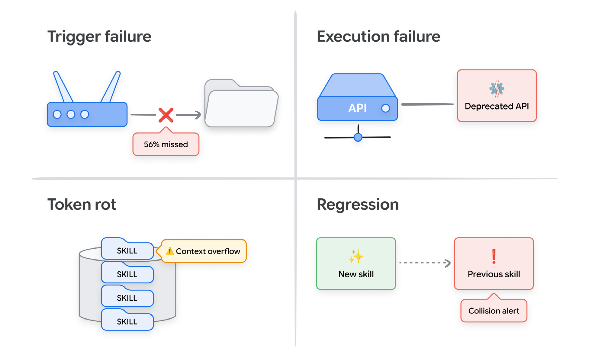
جعبهابزار ارزیابی
پنج الگوی تست مکمل، کل سطح شکست را پوشش میدهند.
| الگو | شرح و نمونه | حالت شکستِ هدف | چه زمانی لازم است |
|---|---|---|---|
| ارزیابی بهمثابه تست واحد | فایل تستی برای مهارت که در هر تغییر روی سیآی (CI) اجرا میشود. نمونه: سه پروندهٔ ارزیابی JSON که در هر ارسال اجرا میشوند؛ تست مردود، ادغام را مسدود میکند. | همه | هر مهارت، هر تغییر |
| مجموعهدادهٔ طلایی | جفتهای گزینششده و نسخهبندیشدهٔ (ورودی، خروجی مورد انتظار) که کنار خود مهارت ذخیره میشوند. نمونه: سی پرسش نماینده با فراخوانهای ابزار و قالبهای مورد انتظار، ثبتشده در دایرکتوری مهارت. | اجرا، محرک | از سطح پیشنویس به بالا |
| داور مدلزبانی (LLM-as-Judge) | مدلی همرده که خروجی را در مقیاس در برابر یک سنجه (rubric) ارزیابی میکند. نمونه: نمرهدهی مرجعمحور در سه بُعد سنجه، که دو بار با جابهجایی موقعیتها اجرا میشود تا سوگیری ترتیب خنثی شود. | اجرا | فقطخواندنی و پیشنویس |
| تخاصمی / تیم قرمز | کاوش نظاممندی که برای آشکارکردن حالتهای شکست طراحی شده است. نمونه: برای هر محرک مثبت، یک بازنویسی و یک حالت مرزی (edge case) منفی؛ ابزار پسرفتسنجی موارد بازگشتی را علامت میزند. | محرک، اجرا | پیش از عبور به سطح مجاز به کنش |
| قناری / سایه | دیپلوی روی ترافیک کنترلشده پیش از انتشار کامل. نمونه: سایه یعنی مقایسهٔ موازی برونخط؛ قناری یعنی یک درصد ترافیک زنده که ۲۴ ساعت پایش میشود. | پسرفت | پیش از هر انتشار در سطح کنش |
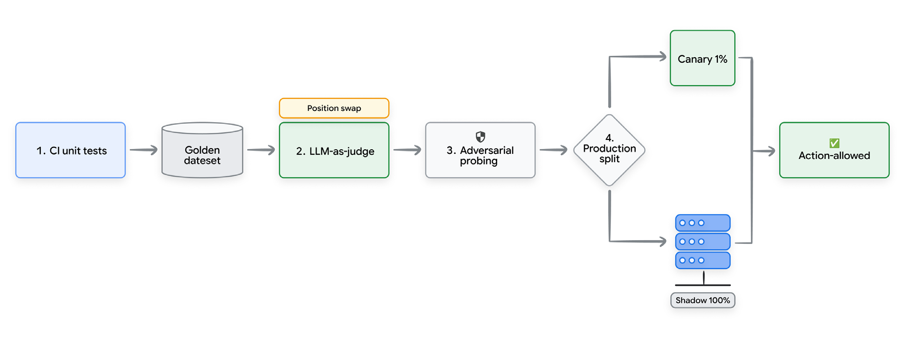
محرک، نخستین دروازه است
مهارتی که هرگز فعال نمیشود نمیتواند کمک کند. مهارتی که بیشازحد گسترده فعال میشود، زمینهٔ نامربوط تزریق میکند.
تحلیل تولیدیِ Vercel نرخ عدم فعالسازی ۵۶٪ را برای مهارتهایی آشکار کرد که انتظار میرفت پیوسته فعال شوند. مهمتر اینکه مهارتی که از دستورهایش تهی شده بود امتیاز ۵۸ گرفت، در حالی که عامل بدون مهارت امتیاز ۶۳ گرفت. این کسری پنجواحدی نشان میدهد که مهارت بدطراحی میتواند فعالانه از توانایی کم کند.
در همان مطالعه، Vercel همچنین اشاره کرد که فهرست منفعلی از قراردادهای پروژه
در AGENTS.md به نرخ قبولی ۱۰۰٪ در برابر مبنای ۵۳٪ رسید. این تأکید میکند که بهتر است
مهارتها را برای گردشکارهای باریک و کنشمحور کنار بگذاریم، در حالی که زمینهٔ سراسری
باید در مستندات منفعل و همیشهدردسترس بماند.
حالا برای رسیدن به دقت محرکِ ۹۰ درصدیِ استاندارد صنعت، توصیف SKILL.md شما — تنها چیزی که
مدل هنگام مسیریابی میبیند — باید چهار وارسی را بگذراند:
- ویژگیِ تستپذیر: باید بتوانید سه محرک مثبت و سه محرک منفی بنویسید.
- روشنی: پرسشهای مبهم با مهارتهای همسایه همپوشانی پیدا نکنند.
- صداقت اجرایی: عملکرد واقعی را توصیف کند، نه رفتار آرمانی.
- پایداری در بازنویسی: صرفنظر از اینکه کاربر قصدش را چطور جملهبندی میکند، یکسان مسیریابی کند.
کیفیت خروجی و مسیر ابزار
وقتی مهارتی فعال شد، هم خروجی نهایی (آنچه عامل میگوید) و هم مسیر ابزار (Tool trajectory) (آنچه عامل انجام میدهد) را جداگانه بیازمایید.
راه هوشمندانه برای این کار، استفاده از توسعهٔ ارزیابیمحور (EDD) است. گردشکار را وارونه کنید و
پیش از نوشتن پیشنویس SKILL.md، سه پروندهٔ ارزیابی JSON بنویسید
(ورودی، ابزارهای مورد انتظار، خروجی مورد انتظار). این کار مشخصات (spec) کارکردی روشنی را از ابتدا تحمیل میکند.
هنگام استفاده از داور (judge) مدلزبانی برای نمرهدهی در مقیاس، دو نکته غیرقابلمذاکرهاند:
جابهجاکردن موقعیت خروجی مرجع و خروجی واقعی برای حذف سوگیری ترتیب، و
کالیبراسیون در برابر ارزیابی انسانی تا رسیدن به توافق ۹۰ درصدی.
تحلیل Latitude (مارس ۲۰۲۶) نشان داد نمرهدهیِ صرفاً بر خروجی نهایی، ۲۰ تا ۴۰ درصد بیشتر از نمرهدهی مسیرآگاه موارد را قبول میکند. این شکاف نمایندهٔ مواردی است که عامل از راه توالی نادرست فراخوانهای ابزار به پاسخ درست رسیده است. در سناریوهای فقطخواندنی پذیرفتنی است؛ در مهارتهای مجاز به کنش بحرانی است، جایی که مسیرهای نادرست ابزار میتوانند عوارض جانبی برگشتناپذیر بسازند.
چارچوبهای ارزیابی معمولاً سه حالت نمرهدهی مسیر ارائه میدهند: دقیق (ترتیب عیناً یکسان)، مرتب (زیرمجموعهٔ مرتب) و دلخواه (زیرمجموعهٔ نامرتب). اعتبارسنجی مسیر باید با سطح مهارت همراستا باشد: مهارتهای فقطخواندنی میتوانند از حالت دلخواه استفاده کنند؛ مهارتهای مجاز به کنش به حالت مرتب یا دقیق نیاز دارند.
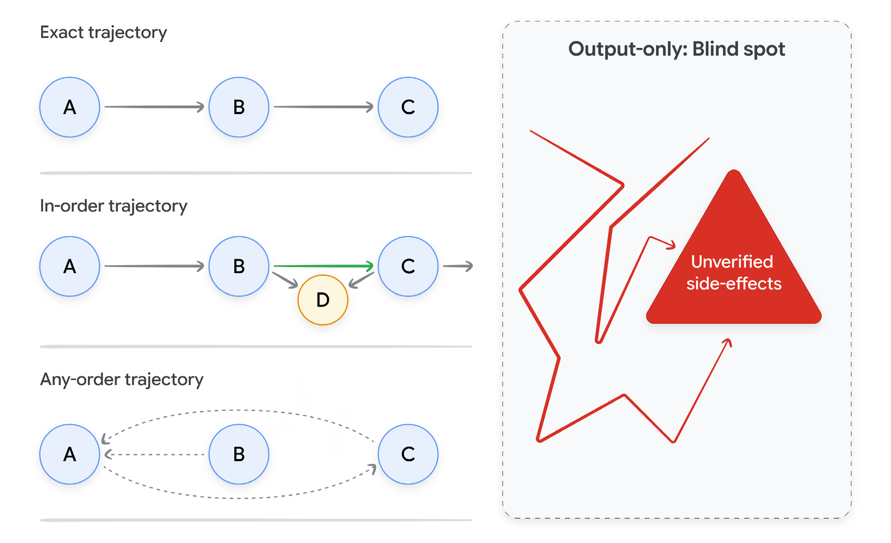
سامانه در برابر مهارت: توهم ارزیابی
تست مسیر، سامانهٔ مرکبِ عامل میزبان در تعامل با مهارت را ارزیابی میکند، نه مهارت را در انزوا. وقتی مسیری چندمهارتی شکست میخورد، اغلب جداکردن مسیریابی عامل، کیفیت دستور، و صداقت اجرا ناممکن است. برای سادهکردن کالیبراسیون، مهارتها را با الگوی «زیرعامل تکمهارتی» ارزیابی کنید (عامل + یک مهارت در برابر عامل پایه) و همبارگذاری پیچیدهٔ چندمهارتی را برای مرحلهٔ پیشرفتهٔ آمادهسازی تولید نگه دارید.
توسعهٔ ارزیابیمحور گردشکار را وارونه میکند و پیش از نوشتن پیشنویس SKILL.md،
سه پروندهٔ ارزیابی مینویسد. یک پروندهٔ ارزیابی حداقلی چنین است:
{
"case_id": "refund_dup_charge_001",
"input": "I was charged twice for order #4521 last Tuesday",
"expected_skill": "refund_processor",
"expected_tool_calls": [
{"tool": "lookup_order", "args": {"order_id": "4521"}},
{"tool": "check_duplicate_charge", "args": {"order_id": "4521"}}
],
"expected_output_format": "confirmation_with_refund_id",
"rubric": ["acknowledges duplicate", "cites order id", "provides next step"]
}قطعهٔ ۳: نمونهای از یک پروندهٔ ارزیابی حداقلی JSON که در توسعهٔ ارزیابیمحور برای تعریف صریح پارامترهای ورودی، مسیرهای ابزار مورد انتظار و سنجههای ارزیابی به کار میرود.
نوشتن پیشنویس سه پروندهٔ اینچنینی از ابتدا، ابهامهای توصیف و خطاهای مسیر ابزار را پیش از آنکه در بدنهٔ مهارت انباشته شوند، آشکار میکند.
بودجهٔ توکن: انزوا یک دام است
هرگز مهارتی را صرفاً در انزوا ارزیابی نکنید. عاملها در تولید، ۵ تا ۱۵ مهارت را همزمان همبارگذاری میکنند. بدنهٔ مهارتی که از ۵٬۰۰۰ توکن فراتر میرود ممکن است بهتنهایی بینقص کار کند، اما هنگام همبارگذاری پوسیدگی زمینه میسازد.
SKILL.md برای یک مدل خاص بپرهیزید، چون قابلیت حمل را نابود میکند.
در عوض منطق اجرا را از مسیریابی جدا کنید و از یک چارچوب ادعای دولایه استفاده کنید:
کد ابزار زیرین را مستقل اعتبارسنجی کنید، و محرکهای SKILL.md را در چند خانوادهٔ مدل
ممیزی کنید تا توصیفهای شکننده و قفلشده به یک معماری را بگیرید.
پژوهشها افت دقت ۱۸٫۲ درصدی در یکی از مدلهای پیشرو را بر اثر تکثیر ابزار و رقابت توجه زمینهای ثبت کردهاند. افزون بر این، پژوهش Chroma (۲۰۲۵) نشان داد همهٔ مدلهای پیشرو با بزرگشدن ورودی تنزل مییابند، بهویژه وقتی نویزِ همبارگذاریشده مانعشان شود.
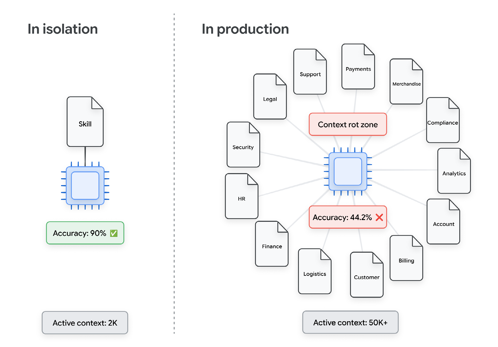
به همین دلیل، مهارتها باید از سطوح سختگیرانهٔ اختیار (authority) فارغالتحصیل شوند:
- فقطخواندنی: ارزیابی با داور مدلزبانی؛ دقت محرک ۹۰ درصد.
- فقطپیشنویس (بازبینی انسانی): مجموعهدادهٔ طلایی با ۲۰ پرونده یا بیشتر؛ تأیید انسانی.
- مجاز به کنش: تیم قرمز تخاصمی کامل؛ موفقیت پایدار در چند اجرا (نه فقط یک قبولی خوششانس)؛ بدون هیچ رویداد رولبک؛ pass^k پایدار.
سنجهٔ pass^k موفقیت پیوسته را میسنجد نه گاهبهگاه: ارزیابی را k بار اجرا میکند و موفقیت در همهٔ اجراها را لازم میداند. در یک بنچمارک شناختهشده، مدلی که در pass^1 امتیاز ۶۱٪ گرفت، در pass^8 به زیر ۲۵٪ سقوط کرد، که نشان میدهد موفقیت تکاجرا پیشبینیکنندهٔ ضعیفی برای اتکاپذیری تولید است.
هنگام کالیبرهکردن این آستانهها، دو عامل حیاتیاند:
- تنزل تولید: پژوهشها نشان میدهند عملکرد تولیدی معمولاً ۲۰ تا ۳۰ درصد پایینتر از اعداد بنچمارک برونخط است.
- سوگیری شبیهسازی: ارزیابیهای مبتنی بر شبیهسازی میتوانند تا حدود ۹ درصد سوگیری خوشبینانه داشته باشند.
در نتیجه، بازبینی انسانی خروجیهای نماینده همچنان نهاییترین سیگنال اعتبارسنجی برای فارغالتحصیلی به سطح مجاز به کنش باقی میماند.
«پوشش ارزیابی» یعنی چه
مهارت وقتی به پوشش ارزیابی کامل میرسد که چهار شرط مستقیماً متناظر با حالتهای شکست اصلی را برآورده کند:
- شکست محرک: راستیآزمایی رفتار محرک با پروندههای مثبت (باید فعال شود) و منفی (نباید فعال شود).
- شکست اجرا: تضمین خروجی درست در گسترهٔ نمایندهای از ورودیهای مورد انتظار.
- پسرفت: تأیید اینکه افزودن این مهارت هیچ افت عملکردی در کتابخانهٔ موجود نمیسازد.
- شکست بودجهٔ توکن: کراندار کردن ردپای توکنی مهارت تا عملکرد نوبتهای بیارتباط را تنزل ندهد.
این سیاههٔ وارسی، فارغالتحصیلی را اداره میکند؛ شکست در هر یک از این شرطها مهارت را در سطح پیشنویس نگه میدارد، صرفنظر از عملکردش در مسیر خوشبینانه. پس از راستیآزمایی، مهارت و مجموعهٔ ارزیابی همراهش برای دیپلوی تولیدی آمادهاند (که در بخش ۵ تشریح میشود).
۵.از نمونهٔ اولیه تا تولید
بخشهای ۱ تا ۴ پوشش دادند که مهارتها چه هستند، چطور یکی بنویسیم، و چطور ارزیابیشان کنیم. این بخش دربارهٔ آن است که وقتی نمونهٔ اولیهٔ کارآمدی را پیش روی مشتری واقعی میگذارید، چه چیزی عوض میشود. نسخهٔ کوتاهش این است: مدل دیگر بخش جالب ماجرا نیست، و مهارتها همان اولیهٔ مهندسیاند که اجازه میدهند قابلاتکا منتشر کنید.
بهعنوان نمونهٔ کارشده، ابزارهای خط فرمانی وجود دارند که برای ساخت، ارزیابی و دیپلوی عاملها روی سکوهای ابری طراحی شدهاند و همهچیزِ پیرامون عامل را اداره میکنند: ساخت اسکلت، ارزیابی، دیپلوی و رصدپذیری (observability).
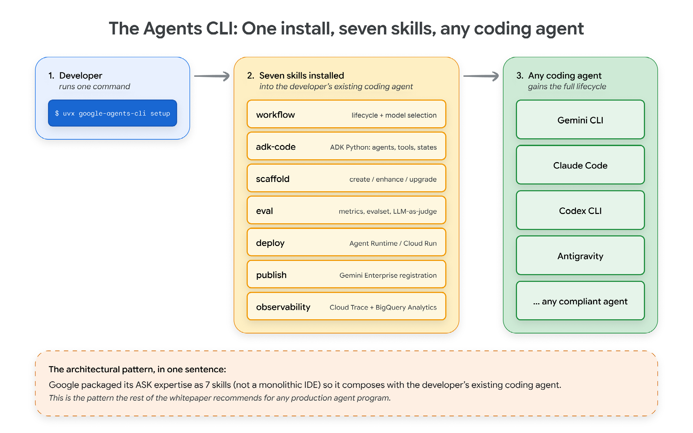
این نمونهٔ کارشده به سه ویژگی اشاره میکند که فراتر از یک پیکربندی خاص تعمیم مییابند:
- تخصص در مهارتها زندگی میکند، نه در رانتایم (runtime). رانتایم کالایی شده است؛ آن هفت مهارت دارایی ماندگارند.
- بستهٔ مهارتها با آنچه از پیش استفاده میکنید ترکیب میشود. مهارتها را نصب میکنید و ابزار کدنویسی موجودتان تواناییهای تازه میگیرد. همین الگو را باید در داخل سازمان هدف بگیرید: تواناییهایی که در ابزار موجود ترکیب میشوند، نه یک درگاه دیگر.
- کل چرخهٔ عمر بهشکل مهارت عرضه میشود. ساخت اسکلت، ساخت، ارزیابی، دیپلوی، انتشار، رصد. هر مرحلهای که زمانی ابزار مخصوص خودش را میخواست، حالا در قالب مهارت جا میشود.
داخل رانتایم یک عامل واقعاً چه چیزی هست
زیر پوستهٔ چارچوب، حلقهٔ عامل میان فروشندگان همگرا شده است: رانتایم یک گفتوگو را نگه میدارد، مدل را صدا میزند، ابزارها را اجرا میکند، فایلها را میخواند و پاسخی برمیگرداند. آنچه در بررسی یکی از این زمانهای اجرا چشمگیر است، این است که چه سهم اندکی از کد به استدلال مربوط میشود.
مهندسی معکوس اخیر یکی از عاملهای کدنویسی شناختهشده (لیو، ژائو، شانگ و شن، ۲۰۲۶) نشان داد ۹۸٫۴٪ کدپایه زیرساخت عملیاتی است: دستهبندهای مجوز، خطوط لولهٔ فشردهسازی زمینه، واگذاری (handoff) به زیرعامل، ذخیرهسازی نشست (session) — و تنها ۱٫۶٪ خودِ حلقهٔ عامل. مدل پشت یک رابط راه دور نشسته؛ آنچه سامانه را در سطح تولید نگه میدارد، مهندسیِ پیرامون آن است.
این همان بینش معماری پشت هر چیزی است که در ادامه میآید. با همگرایی مدلهای پایه در استدلال پایه، تمایزدهندهٔ اتکاپذیری خودگردان (autonomous) به مهندسی قطعیِ پیرامون مدل بدل میشود — و درون آن مهندسی، واحدی که ترکیب و بازاستفاده میشود، مهارت است.
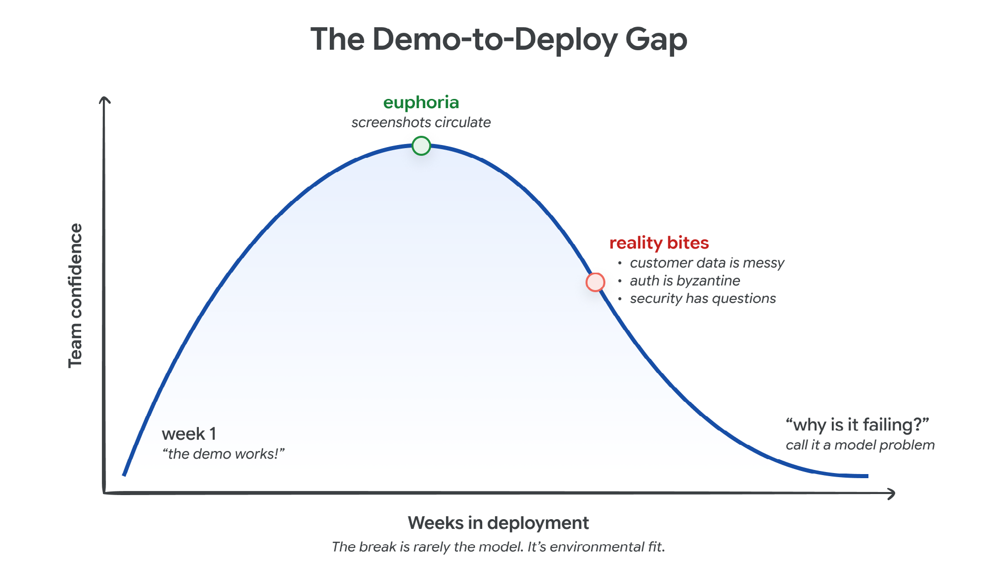
چرا مهارتها واحد بهبودند
نظریهٔ سادهانگارانهٔ بهبود عامل میگوید مدلهای بهتر عاملهای بهتر تولید میکنند. در تولید،
مدل زیرساخت است و مهارتها اولیهایاند که اجازه میدهند بهبودها منتشر شوند.
هر مهارت تازه یک واحد کوچک، مالکدار و تستپذیر از توانایی است (همانطور که در بخش ۱ برپا کردیم).
وقتی حالت مرزی تازهای ظاهر شود، فقط ویرایش یک SKILL.md لازم است؛ توانایی مؤثر عامل
بدون دردسرهای مهندسی پرامپتِ یکپارچه رشد میکند.
سه ویژگی مهارتها این را ممکن میکند:
- مشروطاند. فقط وقتی بار میشوند که توصیفشان با کار بخواند.
- ترکیبپذیرند. یک مهارت میتواند ابزارهای مهارتی دیگر را صدا بزند یا در زنجیرهٔ پاییندستی قرار بگیرد، بیآنکه هیچکدام از دیگری خبر داشته باشد (بخش ۷ داستان ترکیب را عمیقتر میکند).
- مالک دارند. هرکدام در پوشهای نسخهبندیشده با نویسندهای مشخص زندگی میکند، پس بهبود توزیع میشود و در تیم سکوی مرکزی گلوگاه نمیسازد.
| سبک بهبود | زمان چرخه | حالت شکست و مالیات زمینه | چه کسی میتواند |
|---|---|---|---|
| تعویض مدل | روزها تا هفتهها | پسرفت در کارهای بیارتباط مالیات زمینه: ندارد (وزنمحور) | تیم یادگیری ماشین یا سکو |
| ویرایش پرامپت سامانه | دقیقهها تا ساعتها | پوسیدگی زمینه، تعارض دستورها مالیات زمینه: ایستا — در هر نوبت پرداخت میشود | هرکس مالک فایل پرامپت است |
| فاینتیون (fine-tuning) | هفتهها تا ماهها | فراموشی فاجعهبار، بیشبرازش مالیات زمینه: ندارد (وزنمحور) | فقط تیم یادگیری ماشین |
| مهارت تازه | ساعتها تا روزها | کراندار؛ فقط نوبتهای متناظر مالیات زمینه: پویا (Static) — فقط هنگام فعالشدن | هر تیم حوزهای |
حالت شکستی که نمایشها را میشکند: سرریز زمینه
شایعترین حالت شکست عاملها در تولید، توهم (hallucination) نیست. سرریز زمینه است: مدل زمینهای بیش از آنچه بتواند مؤثر به کار ببرد دریافت میکند و بیصدا تنزل مییابد، پیش از آنکه اپراتور متوجه شود. دو رشته پژوهش این را پشتیبانی میکنند:
گمشدن در میانه (Lost in the middle) (لیو و همکاران، ۲۰۲۴). در پرسشوپاسخ چندسندی و بازیابی، عملکرد وقتی بیشترین است که اطلاعات مرتبط در ابتدا یا انتهای ورودی بنشیند و در میانه تنزل مییابد؛ منحنیای U-شکل که حتی برای مدلهای آموزشدیده روی زمینههای بلند هم برقرار است.
پوسیدگی زمینه (پژوهش Chroma، ۲۰۲۵). در بررسی ۱۸ مدل پیشرو، عملکرد با بزرگشدن ورودی تنزل مییابد، حتی وقتی دشواری کار ثابت نگه داشته شود. هر مدلی بدتر میشود، و سریعتر وقتی محتوای مرتبط از عوامل حواسپرتی سخت قابلتفکیک باشد. نویز معمول زمینههای واقعی عامل (خروجی ابزارها، بازیابیهای نیمهمرتبط، استدلالهای میانی) از بدترین انواع است.
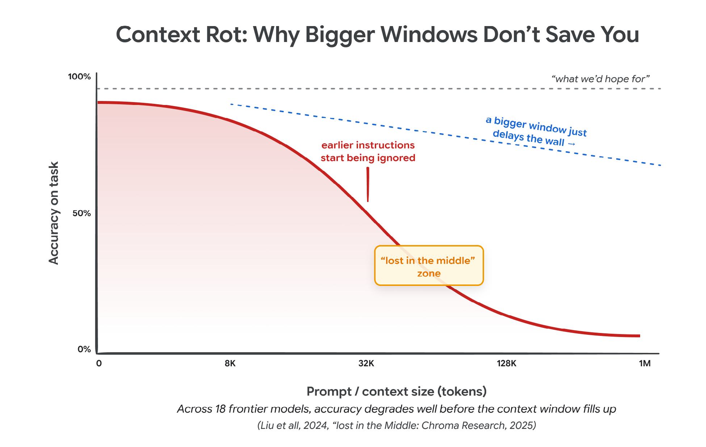
این برای بودجهٔ توکن چه معنایی دارد
افشای تدریجی، که در بخش ۲ پوشش داده شد، پاسخ معماری است: فرادادههای هر مهارت در آغاز بار میشوند، بدنهٔ یک مهارت فقط وقتی بار میشود که توصیفش بخواند، و فایلهای پشتیبان فقط وقتی که بدنه به آنها ارجاع دهد.
ارزش دارد ریاضیاتش را ببینیم. عاملی با پنجاه گردشکار متمایز را در نظر بگیرید. بهشکل یک پرامپت سامانهٔ واحد، در هر نوبت ۱۵٬۰۰۰ توکن بار میشود. بهشکل کتابخانهٔ مهارت، حدود ۴٬۰۰۰ توکن توصیف بهعلاوهٔ بدنهٔ حدوداً ۲٬۰۰۰ توکنیِ تنها مهارت فعال بار میشود؛ در مجموع حدود ۶٬۰۰۰ توکن، در حالی که چهلونُه بدنهٔ دیگر روی دیسک میمانند. آنتروپیک نمونههایی منتشر کرده که در آنها تبدیل یک گردشکار به مهارت، زمینهٔ فعال را از حدود ۱۵۰٬۰۰۰ توکن به ۲٬۰۰۰ توکن رسانده است: کاهشی بیش از ۹۸ درصد.
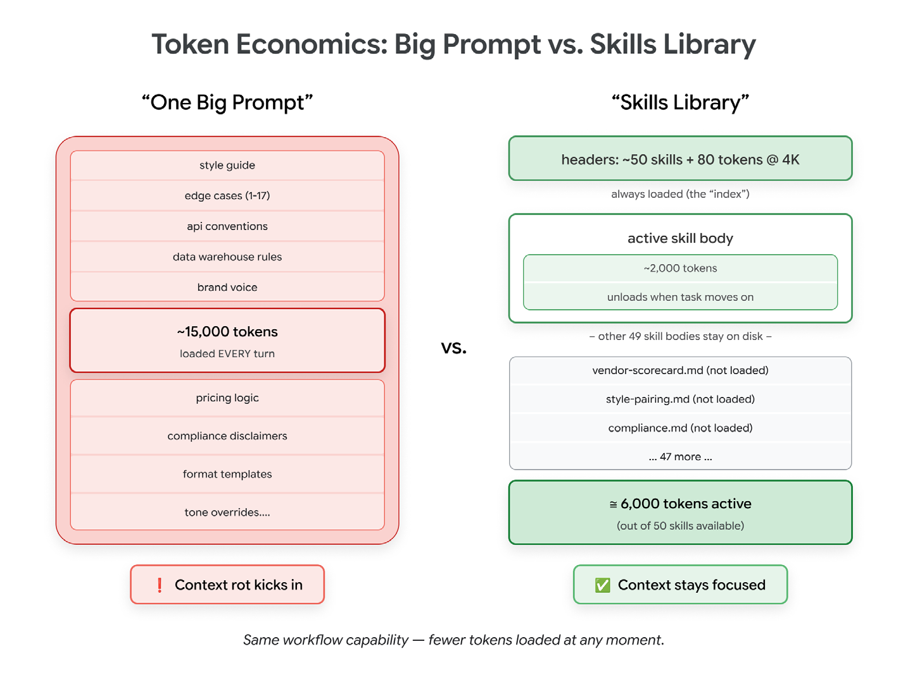
سه پیامد عملی در پی میآید:
- ظرفیت، سنجهٔ اشتباهی است. پنجرهای با ظرفیت یک میلیون توکن میتواند در ۵۰ هزار توکن تنزل معناداری نشان دهد.
- زمینهٔ فعال یک بودجه است، نه یک ظرف. هر توکن پیش روی مدل، توجه را از هر توکن دیگر میگیرد. با پرامپت سامانه همانطور رفتار کنید که تیمهای زیرساخت با حافظه (memory): منبعی متناهی که آگاهانه تخصیص مییابد.
- مهارتها قید (constraint) را حل میکنند. زمینهٔ فعال را کوچک نگه میدارند، در حالی که توانایی در دسترس عملاً بیکران (Bounded) میماند.
وقتی تیمی کتابخانهٔ کارآمدی داشته باشد، پرسشها از نگهداری یک مهارت به تکامل، ترکیب و اکوسیستم بزرگتر جابهجا میشوند.
۶.دربارهٔ فرامهارتها و مهارتهای خودبهبودده
تا اینجا هر مهارتی در این سند را انسانی نوشته است. متخصص حوزه مینشیند، پیشنویس
SKILL.md را مینویسد، میآزمایدش و منتشرش میکند. این نقطهٔ شروع درستی است.
اما وقتی کتابخانهای کارآمد دارید، پرسش طبیعی بعدی این است: آیا عامل میتواند در نوشتن، ارزیابی و
بهبود مهارتها هم کمک کند؟
این قلمرو فرامهارتهاست: مهارتهایی که کارشان نگارش، ارزیابی یا بهبود مهارتهای دیگر است. در عمل، این فرامهارتها در چهار سبد جای میگیرند:
-
نگارش. مهارتهایی که توصیف یک گردشکار را میگیرند و پیشنویس
SKILL.mdتولید میکنند. برخی چارچوبها الگوی «کارخانهٔ مهارت» دارند که این کار را انجام میدهد، و آنتروپیک مهارت سازندهٔ مهارت را عرضه میکند که شما را در ساخت، ارزیابی و تنظیم راهنمایی میکند. - نگارش کمکی از روی ردهای اجرا. بهجای اینکه از انسانی بخواهید گردشکاری را توصیف کند، عامل را چند بار در انجام موفق آن تماشا کنید و سپس آن رد را به مهارت بدل کنید. گردشکار سازندهٔ مهارت مستقیماً از این راه با برداشت مبتنی بر رد پشتیبانی میکند. کار انسان از نوشتن مهارت به تأیید اینکه نسخهٔ برداشتشده گامهای درست را گرفته است جابهجا میشود.
- بهبود. مهارتهایی که یک مهارت موجود بههمراه مجموعهای از پروندههای ارزیابی مردود را میگیرند و ویرایش پیشنهاد میدهند. بهینهساز مهارت سابو و حلقهٔ بهینهسازی توصیف آنتروپیک هر دو نمونهاند. نمونهٔ دیگر الگوی پژوهش خودکار کارپثی است، که در آن عامل تغییری را در یک فایل هدف پیشنهاد میدهد، آزمایشی کراندار اجرا میکند، و تغییر را فقط در صورت بهبود یک سنجه نگه میدارد.
- تکامل کتابخانه. مهارتهایی که کتابخانه را در طول زمان رشد میدهند، همانطور که Voyager کتابخانهٔ مهارت خودش را در ماینکرافت رشد داد. عامل کاری را تمام میکند که مهارتی برایش نداشت، متوجه میشود مسئلهای تکرارشونده را حل کرده، و افزودن مهارتی تازه برای پوشش آن را پیشنهاد میدهد.
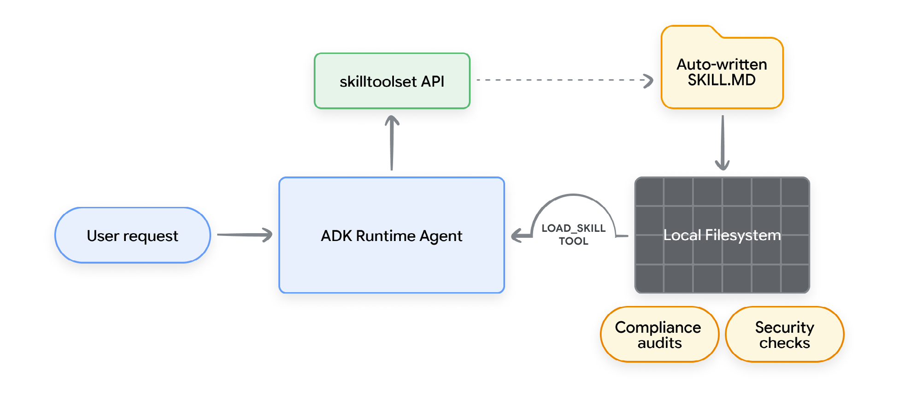
کجا از هم میپاشد
فرامهارتها فقط وقتی کار میکنند که مجموعهٔ ارزیابی شما خوب باشد. عاملی که اجازه دارد مهارتهای خودش را ویرایش کند، با کمال میل برای هر سنجهای که به آن اشاره کنید بهینه میشود، از جمله سنجههایی که بهآسانی میتوان سرشان کلاه گذاشت. کار ارزیابیِ بخش ۴ همان چیزی است که این فرایند را صادق نگه میدارد. بدون تستهای محکم دقت محرک، تستهای پسرفت و وارسیهای نمونهای انسانی، یک حلقهٔ بهبود خودگردان بیسروصدا کتابخانهٔ شما را بدتر میکند، در حالی که گزارش میدهد دارد بهتر میشود.
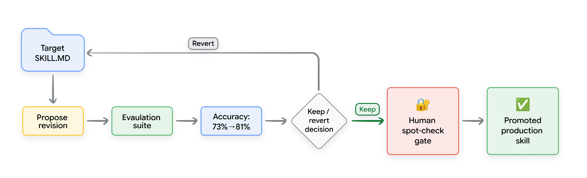
چند عادت که دوام آوردهاند:
- هر چیزی که عامل مینویسد، در سطح پیشنویس وارد کتابخانه میشود، صرفنظر از اینکه فرامهارت چقدر مطمئن باشد. و از همان نردبان خواندن / پیشنویس / کنشِ بخش ۴ بالا میرود، درست مثل هر مهارت انساننوشته.
- برای چند ویرایش نخست، انسان را در حلقه (loop) نگه دارید. حتی وقتی سنجه آشکارا بهتر میشود، تفاوتها را اسکن کنید. آن نوع اشتباهی که عامل میکند — بیشبرازش توصیف به چند پروندهٔ تست، شکستن مهارتی پاییندستی که از وجودش خبر نداشت — دقیقاً همان نوعی است که انسان در سی ثانیه میگیرد.
- با فرامهارت شروع نکنید. اول حلقهٔ نگارش دستی را راه بیندازید. سریعترین راه برای رسیدن به یک کتابخانهٔ بد، این است که عاملی را به پوشهای خالی اشاره کنید و از او بخواهید پنجاه مهارت تولید کند.
این ماجرا به کجا میرود
الگو دارد روی چیزی از این دست مینشیند: انسانها نسخهٔ نخست هر مهارت را مینویسند، فرامهارتها بخش تکراری نگهداری را اداره میکنند (تنظیم توصیفها، افزودن پروندههای تست، آشکارکردن پسرفتها)، و زیرمجموعهٔ کوچکی از تیمها خودگسترشِ کامل را میآزمایند. مرز (boundary) جالب ماجرا همان دستهٔ سوم است، جایی که عامل بر پایهٔ آنچه در ترافیک تولید میبیند مهارتهای تازه پیشنهاد میدهد. امیدبخش است. و در عین حال جایی است که اگر دروازههای ارزیابی سفت نباشند، سریعتر از هرجای دیگری خراب میشود.
۷.ترکیب و بستهبندی مهارتها
گردشکارهای واقعی درون یک مهارت جا نمیشوند. مسئلهٔ ترکیب این است که مهارتها چطور به هم ارجاع میدهند، وضعیت را رد و بدل میکنند و از وابستگیهای (dependency) حلقوی میپرهیزند.
رد و بدل خام خروجیهای مدل زبانی میان مهارتهای منزوی در سامانهای یکپارچه بیاثر است: وضعیت مبهم میشود، اجرا غیرقطعی (deterministic) میشود و دیباگ (debug) دشوار میگردد. معماری عامل از زنجیرهسازی سادهانگارانهٔ درخواستها به هماهنگی قابلپیشبینی تکامل یافته است.
مسیریابی اجرا: هماهنگی گراف جهتدار بدون دور
معماریهای اولیه شکننده بودند و وقتی مراحل ابتدایی توهم میکردند، مستعد انباشت خطا. راهحل صنعت، هماهنگی گراف جهتدار بدون دور است:
- وضعیت جداشده: مسیریابی وضعیت در این معماری به انباشتن تاریخچهٔ اجرا درون درخواست مدل تکیه ندارد.
- گذرگاه پیام فایلی: کنترلگر گراف تحویلها را با رد و بدل ارجاعهای اسکیماای ساختارمند میان گرههای زیرعامل هماهنگ میکند.
- توجه محافظتشده: جداکردن بار داده از ورودی متنی مدل، از تورم کانتکست ویندو جلوگیری میکند و ظرفیت مدل را حفظ میکند.
بستهبندی محیط: نمایههای توانمندی
فعالکردن همهٔ مهارتها، مسیریابی زبان طبیعی را تنزل میدهد و کانتکست ویندو را اشباع میکند. معماران باید از ابزارهایی برای مدیریت «نمایههای توانمندی» استفاده کنند که بهعنوان شخصیتهای تخصصیِ متناسب با وضعیتهای اجرایی مشخص عمل میکنند. هر نمایه یک بستهٔ ابزار پیمانهای است که اینها را تعریف میکند:
- مهارتهای فعال و دسترسی به ابزارها.
- دستورهای سامانه و گاردریلهای (guardrail) عملیاتی.
- گردشکارهای خودکار و آرایشهای زیرعاملی.
- پارامترهای مدل زبانی، مانند انتخاب مدل و دما.
هنگام اجرا، لایهٔ هماهنگی دستورهای سامانهٔ پیشین را تخلیه میکند و متغیرهای کهنه را پاک میکند و سپس نمایهٔ توانمندی (Capability profile) تازه را در حافظه جایگزین میکند. این فرایند سختگیرانهٔ برچیدن و بازسازی از گمشدن زمینه جلوگیری میکند.
پرکردن گراف: گونهشناسی متعارف مهارتها
برای ساخت گراف، تواناییهای مهندسی مجزا به کارکردهای مشخص گره درون گراف اجرا نگاشت میشوند:
- مولد: تبدیل قصد کاربر به مصنوعهای ساختارمند.
- بازبین و دروازه: دروازههای قطعی که در صورت شکست اعتبارسنجی، اجرا را مسدود میکنند.
- خط لوله: هماهنگی مسیرهای خطی درون محیط گراف بزرگتر.
- وارونگی و بازیابی: وادارکردن عامل به شفافسازی پیشفرضها پیش از اجرا.
- پوششهای زمینهٔ حوزه: گرههای مرجعی که قراردادهای حوزه را میآموزند.
بدهی زمینه و انتقال هوش به چپ
مهارتها توجه مدل را میسوزانند، و توجه منبعی کمیاب است. وقتی نویسندگان میکوشند با متورمکردن توصیفهای مهارت (مثلاً «همیشه فلان کار را بکن» با حروف بزرگ) رفتار قطعی در رانتایم بسازند، بدهی زمینه (Context debt) انباشته میشود. مدلها یاد میگیرند این دستورهای پرتأکید را نادیده بگیرند، دقیقاً همانطور که یک توسعهدهندهٔ انسانی دیوار هشدارهای ناخوانا را نادیده میگیرد.
بهترین روش مهندسی این است که هوش را به چپ منتقل کنید. بهجای امید به اینکه مدل قواعد پیچیده را در رانتایم درست تفسیر کند، قضاوتهای ذهنی را در مهارتها تقطیر کنید. با بیرونراندن منطق از درخواست مدل و گذاشتن آن در اسکریپتهای استاندارد و تستپذیر، سطح آشوبناک برنامهتان را کاهش میدهید.
| معماری | سازوکار | مزیت اصلی | مناسب چه کاری |
|---|---|---|---|
| خط لولهٔ خطی | رد و بدل متوالی متن میان گرههای ثابت. | سربار مهندسی کم و نمونهسازی سریع. | کارهای مولد تکحوزهای و کمپیچیدگی. |
| هماهنگی گراف بدون دور | اجرای موازی گرافمحور با رد و بدل وضعیت از راه ارجاع اسکیما در گذرگاه فایلی. | پیشگیری از دور و ایزولهسازی سختگیرانهٔ زمینه. | گردشکارهای چندعاملی که اتکاپذیری بالا میخواهند. |
| نمایههای توانمندی | بستههای قابلتعویض و نسخهبندیشدهٔ پارامتر و ابزار. | تعویض سریع شخصیت با پاکسازی (sanitization) حافظهٔ چرخهٔ عمر. | دیپلوی نقشمحور و عاملهای حوزهویژه. |
بهترین روشهای قابلاجرا
- نرمافزار بنویسید، نه قاعده: دستورهای منفی به مدل را با قیدهای نرمافزاری قطعی جایگزین کنید که کنشهای نامعتبر را ناممکن میسازند.
- افشای تدریجی را پیاده کنید: دستورهای پیچیده را فقط هنگام فراخوانی صریح مهارت بهصورت پویا بار کنید.
- وضعیت را جدا کنید: هرگز از کانتکست ویندوی مدل بهعنوان پایگاه داده استفاده نکنید. فقط نشانیها یا اشارهگرها را از راه فایلسیستم یا گذرگاه پیام به زیرعاملها بدهید.
۸.چگونه از میان صدها مهارت موجود انتخاب کنیم
تا اوایل ۲۰۲۶، مارکتپلیسهای (marketplace) عمومی مهارت از ۴۰٬۰۰۰ فهرست عبور کرده بودند، و سکوی پیشرو گزارش میداد که دهها هزار مهارت تازه تنها در هفتههای نخست ژانویه منتشر شده است. ریپوهای رسمی فروشندگان، کتابخانههای مهارت چارچوبها و مارکتپلیسهای جامعه حالا بیش از آن تعداد مهارت میزبانی میکنند که هیچ شاغلی بتواند تکتک بازبینیشان کند. مسئلهٔ انتخاب واقعی و رو به رشد است.
سه معیار سرانگشتی کمک میکنند:
- نخست، برای ابزارهای اختصاصی فروشنده، مهارتهای دستاول را ترجیح دهید. هر چیزی که نویسندگانِ خودِ سامانهٔ زیرین نوشته باشند، درستتر و نگهداشتهشدهتر از جایگزینهای جامعه خواهد بود.
- دوم، هر چیزی را که به آن وابستهاید قفل نسخه کنید. مهارتهای جامعه تکامل مییابند، و وابستگی قفلنشدهای که دیروز کار میکرد میتواند فردا شکست بخورد.
- سوم، پیش از پذیرش ممیزی کنید. مهارت، کدی است که در زمینهٔ شما اجرا میشود. با آن مثل هر وابستگی دیگری رفتار کنید، با همان بهداشت زنجیرهٔ تأمین.
همهٔ منابع برابر نیستند. در اوایل ۲۰۲۶ سه دستهٔ منبع مهارت وجود دارد و موضع عملیاتی درست برای هرکدام متفاوت است:
| منبع | پیشفرض اعتماد | چه کسی نگهداری میکند |
|---|---|---|
| مهارتهای دستاول فروشنده | پیشفرض اعتماد؛ نسخه را قفل کنید | تیمی که محصول زیرین را ساخته است |
| مهارتهای گزینششدهٔ سازمان | اعتماد درون سازمان؛ بازبینی هنگام پذیرش | تیمهای حوزهای خودتان، با بازبینی در پولریکوئست (pull request) |
| مهارتهای جامعه | پیش از پذیرش ممیزی؛ قفل نسخهٔ سختگیرانه | نویسندگان داوطلب، با تعهد نگهداری متغیر |
۹.نتیجهگیری
این مقاله را با نگاه به مفهومی شگفتانگیزانه ساده آغاز کردیم: پوشهای شامل یک فایل مارکداون و چند اسکریپت اختیاری. با این حال، همین ساختار سبک — مهارت عامل — دارد بهطور بنیادی شکل ساختن عاملهای هوش مصنوعی را عوض میکند. سرانجام به مدلهای پایه، حافظهٔ رویهایِ واقعی و تستپذیر میدهد و اجازه میدهد بهخاطر بسپارند چطور کارها را گامبهگام اجرا کنند. با تکیه بر جادوی افشای تدریجی، مهارتها مسئلهٔ پوسیدگی زمینه را حل میکنند. یک عامل عمومی واحد حالا میتواند بهروانی به گردشکارهای تخصصی متعدد دسترسی داشته باشد، بیآنکه بودجهٔ توکنش خفه شود.
الگویی که در این مقاله مدام به آن بازمیگردیم این است که قالب عمداً کوچک است تا کار جالب پیرامون آن رخ دهد، نه درونش. ارزیابی مهارتها در شرایط واقعگرایانهٔ همبارگذاری جالب است. ترکیب مهارتها در گردشکارها بدون استفاده از کانتکست ویندو بهعنوان گذرگاه پیام جالب است. اجازهدادن به عاملها برای پیشنویسنویسی مهارت از روی ردهای موفق، با انسانهایی که بهجای نوشتن بازبینی میکنند، جالب است. رمزگذاری دو دهه دانش نهادی در کتابخانهای نسخهبندیشده، تستپذیر و قابلحکمرانی جالب است. همهٔ اینها حالا به شکلی دستیافتنیاند که دوازده ماه پیش نبودند، چون آن اولیه وجود دارد.
در سراسر این مقاله کوشیدیم دربارهٔ آنچه تثبیت شده، آنچه هنوز در حال پیدایش است، و آنچه احتمالاً تغییر خواهد کرد مشخص باشیم. قالب تثبیت شده است: حالا استانداردی باز است با پذیرش در هر عامل کدنویسی، ربات گفتوگو و چارچوب عاملی که اهمیت دارد. معماری پیرامونش هنوز در حال پیدایش است: ارزیابی در شرایط همبارگذاری، بهینهسازی در سطح کتابخانهٔ مهارت، ساخت مهارت بهدست عامل، و الگوهای حکمرانیای که همهٔ اینها را در مقیاس ایمن میکنند.
اگر امروز شروع میکنید، پیشنهاد ما همان است که در سراسر مقاله گفتیم: کوچک شروع کنید، از دانشی که از پیش دارید شروع کنید، با مهارتها مثل کد رفتار کنید، آنچه را منتشر میکنید بسنجید، و وقتی یک مهارت کافی است سراغ معماری چندعاملی نروید. تیمهایی که این را همین حالا بفهمند، سامانههای تمیزتری از تیمهایی خواهند ساخت که منتظر میمانند تا اجماع صنعتی برسد. قالب تثبیت شده است. کار تازه شروع شده.
الف.پیوست الف — برگهٔ تقلب عملی
این بخش برای چاپ و استفادهٔ مستقل طراحی شده است. باقی مقاله را در قالب تصمیمهایی که تیم با آنها روبهرو میشود فشرده میکند.
حداقل SKILL.md
این را کپی کنید، جاینگهدارها را تنظیم کنید، تمام.
---
name: skill-name
description: |
[What it does in one verb-led sentence.] Use this skill when the user
[trigger phrase 1], [trigger phrase 2], or [trigger phrase 3].
Do NOT use for [anti-trigger 1] or [anti-trigger 2].
version: 1.0.0
license: MIT
allowed-tools: [Optional] Read Bash Write
metadata:
author: [Optional] your-handle
---
# Skill Name
## When to use
- [Concrete scenario]
- [Concrete scenario]
## When NOT to use
- [Out-of-scope scenario]
## Workflow
1. [Step]
2. [Step]
3. See `references/advanced.md` for [edge case].
## Examples
- Input: "..." → Output: "..."
## Output format
- Use `assets/template.md` etc.
## Anti-patterns to avoid
- Don't [...]ساختار پوشه
skill_name/
├── SKILL.md # Required: YAML frontmatter + markdown instructions
├── scripts/ # Optional: executable helper scripts (Python, Bash)
├── references/ # Optional: supplementary context loaded as needed
├── assets/ # Optional: files used in output (templates, resources)
└── ... # Any additional files or directoriesنامگذاری
- نام دایرکتوری: snake_case
- نام مهارت: kebab-case
- شکل مصدری را ترجیح دهید: processing-pdfs، نه pdf-processor
- از نامهای عمومی بپرهیزید: helper، utils، tools، data
- از پیشوند فروشنده بپرهیزید
- از اصطلاحات داخلی که بیرونیها نمیشناسند بپرهیزید
میدان توصیف
توصیف، الگوریتم مسیریابی است. بیش از هرجای دیگری اینجا وقت بگذارید.
- بگویید چه میکند و کِی باید استفاده شود.
- کلیدواژههای محرک را جلو بیندازید («یک پیام کامیت (commit) بساز…»، نه «این مهارت کمک میکند به…»).
- بگویید کِی نباید استفاده شود، تا از فعالسازی بیشازحد جلوگیری شود.
- وقتی مدل کمفعالسازی میکند، سمج باشید.
- محدودیت طول را رعایت کنید؛ بیشتر نویسندگان حدود ۵۰ واژه را هدف میگیرند.
پنج قاعده
- یک مهارت، یک کار. اگر نمیتوانید در یک جمله بگویید مهارت چه میکند، دو مهارت است. پیش از نوشتن تجزیهاش کنید.
- توصیفها یک رابطاند. عامل مهارتها را با خواندن توصیف انتخاب میکند. توصیف مبهم یعنی مهارت بلااستفاده.
- مهارتها وابستگیاند. مثل کتابخانهها با آنها رفتار کنید: نسخهبندی، قفل نسخه، بازبینی در پولریکوئست. مهارتی که تست ندارد، یک قابلیت نیست؛ یک امید است.
- تیم درست، مالک مهارت درست. متخصصان حوزه مالک مهارتهای حوزهاند. نگذارید تیم هوش مصنوعی گلوگاه دانش حوزهای سازمان شود.
- رانتایم عامل قابلتعویض است. مهارتها را به یک رانتایم گره نزنید؛ قابلیت حمل بخشی از ارزش است.
اصول کیفیت
- اول خودتان کار را انجام دهید. شکست واقعی سیگنال تولید میکند؛ گمانهزنی نویز.
- دلیل را بگویید، نه فقط قاعده را. مدلها وقتی بفهمند چرا دستوری وجود دارد، بهشکل چشمگیری به حالتهای مرزی تعمیم میدهند. اگر دیدید دارید «همیشه» یا «هرگز» را با حروف بزرگ تایپ میکنید، مکث کنید و بهجایش منطق را توضیح دهید.
- هر سطر باید جای خودش را بخرد. نکتههای ظریف، فرمانهای دقیق، منطق کسبوکار و ضدالگوها را نگه دارید. چیزهای کلیشهای را که مدل از پیش میداند حذف کنید.
- یک مهارت، یک کار. اگر توصیف میان دو توانایی بیارتباط به «و» نیاز دارد، تقسیمش کنید.
- دستورها را راستیآزماییپذیر کنید. اگر عامل نتواند بفهمد قاعده را رعایت کرده یا نه، قاعده بیشازحد مبهم است.
- آنچه تکرار میشود را بستهبندی کنید. کد کمکیای که عامل مدام از نو میسازد، جایش در
scripts/است.
بایدها
- کوچک و مشخص شروع کنید.
- وقت نامتناسبی روی میدان توصیف بگذارید. الگوریتم مسیریابی است. همیشه شامل «چه میکند»، «کِی استفاده شود» و «کِی نشود» باشد.
- به افشای تدریجی اعتماد کنید.
- کار قطعی را در
scripts/بستهبندی کنید، نه بهشکل دستور. - با مهارتها مثل کد رفتار کنید.
- به یاد داشته باشید: مهارتها بهعلاوهٔ MCP، نه مهارتها در برابر MCP.
- پروندههای تست و ارزیابی کنترلشده و برنامهپذیر داشته باشید.
نبایدها
- توصیفهای مبهم مثل «به اسناد کمک میکند» ننویسید. از فعلهای مشخص، عبارتهای محرک و بند «کِی استفاده نشود» استفاده کنید.
- بدنهٔ
SKILL.mdبیش از ۵٬۰۰۰ واژه ننویسید. جزئیات را بهreferences/ببرید. - مسیرها یا رازها را سختکد نکنید.
- قواعد «همیشه فلان کار را بکن» را که مناسبتر برای
AGENTS.mdهستند جاسازی نکنید. - کتابخانهها یا مهارتهای شخص ثالث نامطمئن را بدون پویش نصب نکنید.
- MCP را بهشکل اسکریپت دوباره اختراع نکنید.
بوی بد مهارت (اگر اینها را دیدید، بازنویسی کنید)
- بیش از ۵٬۰۰۰ واژه. احتمالاً دو مهارت است، یا مطلب مرجعی که باید در
references/زندگی کند. - دو تیم حوزهای میتوانند بهطور موجه مالکش باشند. هنوز تجزیه (decomposition) نشده؛ در مرز تیمها تقسیمش کنید.
- نمیتوانید برایش سه پروندهٔ تست بنویسید. توصیف بیشازحد مبهم است؛ مهارت کارهای زیادی میکند.
- به هیچ منبع دیگری ارجاع نمیدهد. شاید فقط یک دستور بلند است که جایش در پرامپت سامانه بوده.
- مدام بخش «حالتهای مرزی» اضافه میکنید. هر حالت مرزی احتمالاً مهارت خودش را میخواهد.
- توصیفش با «مهارتی مفید برای…» شروع میشود. بازنویسی کنید. توصیف باید محرک، ورودیها و خروجی را نام ببرد.
سیاههٔ وارسی پوشش ارزیابی
مهارت فقط وقتی «ارزیابیشده» است که هر چهار مورد برآورده شوند:
- ☐ محرک. پروندههای تست مثبت و منفی. هدف: دقت محرک ۹۰ درصد.
- ☐ اجرا. خروجی درست در گسترهٔ نمایندهای از ورودیها.
- ☐ پسرفت. افزودن این مهارت هیچ افتی در مجموعهٔ کتابخانهٔ موجود نسازد.
- ☐ بودجهٔ توکن. همبارگذاریشده با ۵ تا ۱۵ مهارت پرکاربرد، نوبتهای بیارتباط را تنزل ندهد.
شکست در هر مورد، مهارت را در سطح پیشنویس نگه میدارد، صرفنظر از عملکردش در مسیر خوشبینانه.
سیاههٔ وارسی دیپلوی
- ☐ پیشانینوشت معتبر است (وارسی نحوی میگذرد).
- ☐ توصیف شامل «چه میکند» + «کِی» + «کِی نه» است.
- ☐ اسکریپتها تست واحد دارند و در سیآی قبول میشوند.
- ☐ مجموعهٔ ارزیابی در سیآی با آستانهٔ حداقلی قبول میشود.
- ☐ پویش امنیتی تمیز است (بدون راز، بدون وابستگی نامطمئن).
- ☐ توصیف را کسی جز نویسنده بازبینی کرده است.
- ☐ اگر عمومی منتشر میشود، مسیرهای نصب میانابزاری آزموده شدهاند.
- ☐ تأمین سطح سازمانی بهروزرسانی شده است (در صورت کاربرد).
AGENTS.md = فایل راهنمای پروژه · ابزارها و MCP = دستها ·
بازیابی افزوده = کتابخانه · مهارتها = دفترچهٔ راهنمایی که همکار باتجربه روز اول به شما میدهد،
و هوش مصنوعی هرگز فراموشش نمیکند.
از فردا از کجا شروع کنیم
- یک ساعت باتجربهترین متخصص تیم را کناری بکشید. از او بخواهید سه گردشکاری را که مرتب انجام میدهد روایت کند. ضبطش کنید.
- پرتکرارترین گردشکار را انتخاب کنید. خودتان درخواستها را بدون هیچ مهارتی اجرا کنید و جایی را که عامل شکست میخورد یادداشت کنید.
- از روی متن ضبطشده پیشنویس
SKILL.mdبنویسید. پیش از نوشتن بدنه، سه پروندهٔ ارزیابی بنویسید (دو مثبت، یک منفی). - در سطح فقطخواندنی منتشر کنید. در شرایط شبیه تولید بیازمایید. توصیف را تکرار کنید تا دقت محرک از ۹۰ درصد عبور کند.
تکرار کنید. کتابخانه را یک گردشکار در هر نوبت بسازید. در برابر وسوسهٔ اینکه یک مدل زبانی در روز اول پنجاه مهارت تولید کند مقاومت کنید.
ب.پیوست ب — مطالعهٔ موردی: تخصص حوزه بهمثابه کد (مهارتهای عمودی در خردهفروشی)
این بخش نمونهٔ کارشدهٔ مقاله است. نشان میدهد یک خردهفروش بزرگ چگونه کتابخانهٔ مهارتش را ساختار میدهد تا دانش نهادیای را که برند را از رقبایش متمایز میکند بگیرد، و چرا آن کتابخانه — نه هیچ عامل سفارشی خاصی — دارایی راهبردی ماندگار است. ما الگو را توصیف میکنیم، نه پیادهسازی هیچ فروشندهٔ خاصی.
چرا خردهفروشی مورد متعارف مهارتهاست
دو خردهفروش که روی رانتایم یکسانی کار میکنند و از راه رابطهای مشابه به دادهٔ مشابه دسترسی دارند، تجربههای خرید بهشدت متفاوتی تولید میکنند. تخصص خردهفروشی از آن نوع دانشی است که تاریخاً در سه جایی گیر کرده که سامانههای هوش مصنوعی برای رسیدن به آنها مشکل داشتهاند: در ذهن خریداران ارشد، بازرگانان و مدیران دسته؛ در دفترچههای عملیاتی سیصفحهای که کسی نمیخواندشان؛ و در کانالهای گفتوگویی که پاسخ «آیا باید این محصول را با آن یکی پیشنهاد بدهیم؟» در رشتهای از سال ۲۰۲۳ زندگی میکند.
مهارتها این دانش را به شکلی میگیرند که سامانههای مشتریمحور شرکت واقعاً به کارش میبرند.
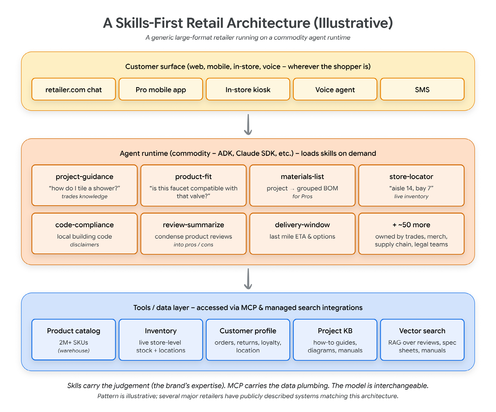
معماری چه شکلی است
معماری سه لایه دارد. لایهٔ بالا سطح مشتری است: گفتوگو در وبسایت، برنامهٔ موبایل، کیوسک درون فروشگاه، عامل صوتی در مرکز تماس. هر سطح نازک است: ورودی کاربر را به رانتایم میفرستد و پاسخ را نمایش میدهد.
لایهٔ میانی رانتایم عامل و هماهنگکننده (Orchestrator) است که گفتوگو را نگه میدارد، مهارتها را بار میکند، ابزارها را صدا میزند و پاسخ را سرِهم میکند.
لایهٔ پایین صفحهٔ داده و ابزار است: فهرست محصولات (اغلب میلیونها قلم)، موجودی زنده با دادهٔ مکانی در سطح فروشگاه، پروفایل مشتری و تاریخچهٔ سفارش، پایگاه دانش پروژه، و جستوجوی بُرداری روی نقدها، دفترچههای راهنما و برگههای مشخصات.
آنچه برای این مقاله اهمیت دارد، لایهٔ میانی است. خودِ رانتایم عمومی است: هر یک از زمانهای اجرایی که از استاندارد باز مهارتها پشتیبانی میکنند. مهارتهایی که در آن رانتایم بار میشوند مختص حوزهٔ خردهفروشاند، و همانها تخصص برند را به مشتری میرسانند.
نمونهای از یک کتابخانهٔ مهارت
آن کتابخانه واقعاً چه شکلی است؟ در زیر مجموعهای نماینده از مهارتهایی میبینید که یک خردهفروش بزرگ لوازم ساختمانی بهطور موجه نگه میدارد. هرکدام یک پوشه است. هرکدام یک مالک واحد دارد. هرکدام مجموعهٔ ارزیابی خودش را دارد (با الگوهای بخش ۴). با هم، حافظهٔ کاری شرکت دربارهٔ نحوهٔ خدمت به مشتریان را میسازند.
- project-guidance. دانش حرفهایای را رمزگذاری میکند که پرسش مبهم («چطور حمام را کاشی کنم؟») را به برنامهای گامبهگام بدل میکند. شامل وابستگیهای ساختاری (زیرسازی باید پیش از کاشیکاری ضدآب شود)، منطق ترتیب (برشها پیش از نصب)، و هشدار اشتباههای رایج. مالک: تیم دانش حرفهای. سطح: فقطخواندنی.
- materials-list. توصیف پروژه (صوتی، متنی، یا فهرست ناقص) را میگیرد و صورتحساب مواد گروهبندیشده تولید میکند، شامل اقلامی که پیمانکار احتمالاً فراموش میکند. مالک: بازرگانی حرفهای. سطح: فقطپیشنویس؛ مشتری پیش از خرید بازبینی میکند.
- review-summarize. نقدهای طولانی محصول را به مزایا، معایب و کاربردهای رایج فشرده میکند. وقتی فعال میشود که مشتری دربارهٔ تجربهٔ واقعی با محصولی بپرسد. مالک: شخصیسازی. سطح: فقطخواندنی.
- delivery-window. گزینههای تحویل آخرینمرحله و زمان تخمینی را با توجه به موقعیت مشتری، موجودی فروشگاه و شبکهٔ حمل شرکت حساب میکند. مالک: تأمین و تحویل. سطح: فقطخواندنی.
- return-policy. قواعد بازگشت کالای شرکت را رمزگذاری میکند، شامل دهها استثنا برای اقلام سفارش ویژه، مواد خطرناک، برشهای سفارشی و قیمتگذاری قراردادی. مالک: خدمات مشتری. سطح: فقطخواندنی. ارتقا به سطح مجاز به کنش (مثلاً صدور بازپرداخت) به مهارتی دوم با بازبینی بسیار سختگیرانهتر نیاز دارد.
هرکدام آنقدر کوچکاند که بتوان مستقل بازبینی، تست و منتشرشان کرد.
یک پرسش واحد چگونه در کتابخانه مسیریابی میشود
در نظر بگیرید وقتی مشتری میپرسد «میخواهم حمام بچهها را بازسازی کنم، چه چیزهایی لازم دارم؟» چه اتفاقی میافتد.
رانتایم در آغاز نشست، توصیفهای سطحیکِ همهٔ مهارتها را بار میکند (هرکدام حدود ۳۰ تا ۸۰ توکن، در مجموع حدود ۲ کیلوبایت). تشخیص میدهد که project-guidance میخواند و بدنهاش را بار میکند، که طرح کلی مراحل بازسازی را تولید میکند. اگر مشتری دربارهٔ تحویل پیگیری کند، مهارت delivery-window بار میشود. اگر دربارهٔ بازگشت کالای مشخصی بپرسد، return-policy بار میشود. مهارتهای پیشین میتوانند در زمینه بمانند یا با پیشروی گفتوگو رها شوند.
مالکیت: چه کسی کدام مهارت را مینویسد
مهمترین تصمیم حکمرانی که یک خردهفروش دربارهٔ کتابخانهٔ مهارتش میگیرد، این است که مالک هر مهارت کیست. اصل این است که مالکیت را به تیمهایی توزیع کنید که از پیش مالک تخصص زیریناند:
| خانوادهٔ مهارت | تیم مالک | چرا |
|---|---|---|
| project-guidance، تناسب محصول | دانش حرفهای / مدیریت دسته | این تیمها قواعد بازرگانی و حرفهای را در اختیار دارند و بههرحال هفتگی ویرایششان میکنند. |
| materials-list | بازرگانی حرفهای | منطق مشخص صورتحساب مواد برای بخش حرفهای، مال همان تیم است. |
| delivery-window | عملیات فروشگاه / تأمین | قواعد موجودی زمانواقعی و حمل دائم عوض میشوند؛ تیمی که ادارهشان میکند مالک مهارت است. |
| review-summarize | شخصیسازی / علم داده | نزدیکترین تیم به پردازش زبان طبیعی زیرین و سیگنالهای بازخورد مشتری. |
نردبان خواندن / پیشنویس / کنش
دومین تصمیم حکمرانی این است که هر مهارت مجاز به چه کاری است. این همان مدل سطحبندی بخش ۴ است که با نمونههای ویژهٔ خردهفروشی اعمال شده:
| سطح | توانایی | بازبینی | نمونهها |
|---|---|---|---|
| فقطخواندنی | میتواند داده بگیرد، پرسوجو کند یا توصیف کند؛ نمیتواند وضعیت را تغییر دهد. | تأیید تیم حوزه | review-summarize، store-locator، project-guidance |
| فقطپیشنویس | میتواند محتوا برای بازبینی انسانی تولید کند؛ نمیتواند ارسال یا ثبت کند. | تیم حوزه + مالک قالب | draft-customer-email، materials-list |
| مجاز به کنش | میتواند عملیات برگشتناپذیر روی سامانههای واقعی اجرا کند. | تیم حوزه + امنیت و انطباق + تأیید مدیریت | issue-refund، send-customer-message، reserve-inventory |
این برای تیم امنیت — و برای تنظیمگری که سرانجام سر میرسد — بهمراتب قابلدفاعتر از بدیل آن است: عاملی جعبهسیاه که هر کاری را که آموزش و پرامپت سامانهاش تولید میکند انجام میدهد.
چرا رقابت با این، سختتر از رقابت با یک عامل سفارشی است
اگر رقیب و خردهفروش ما هر دو روی رانتایم عمومی یکسانی کار میکنند — و میکنند، چون رانتایم کالایی شده است — پس تطبیق رانتایم بیاهمیت است. کتابخانهٔ مهارت، الگوهای انباشتهٔ شرکت را رمزگذاری میکند. این نکتهٔ راهبردی مرکزی این مقاله است.
خردهفروشی که سنگین روی عاملهای سفارشی سرمایهگذاری میکند اما کتابخانهٔ مهارتش را رها میکند، روی همان بخشی از پشته سرمایهگذاری کرده که رقبا رایگان به آن میرسند. خردهفروشی که روی مهارتها سرمایهگذاری میکند، حتی روی رانتایمی عمومی، دارایی ماندگاری میسازد که آنچه شرکت واقعاً میداند را در خود نگه میدارد.
شروع سرد: واقعاً از کجا آغاز کنیم
تمرینی مفید: باتجربهترین متخصص تیم را یک ساعت کناری بکشید، از او بخواهید سه گردشکاری را که مرتب انجام میدهد روایت کند، و گفتوگو را ضبط کنید. متن ضبطشده، تقریباً بهمعنای واقعی کلمه، پیشنویس اول سه مهارت است. این همان نوع کاری است که پیش از مهارتها، خانهٔ روشنی نداشت. حالا دارد.
دربارهٔ این ترجمه: این متن، ترجمهٔ فارسی مقالهٔ Agent Skills از مجموعهمقالات عاملها (می ۲۰۲۶) است، نوشتهٔ تانوی سینگال، گابریلا هرناندز لاریوس، دبانشو دوس، لاوی نیگام و اسمیتا کولان. شکلها و قطعهکدها از سند اصلی برداشته شدهاند؛ متن قطعهکدها بهعمد به زبان انگلیسی باقی مانده است، چون دستورهای اجراییاند و ترجمهشان کارکردشان را از بین میبرد. ارجاعهای عددی مقالهٔ اصلی برای خوانایی حذف شدهاند؛ برای فهرست کامل منابع به سند اصلی مراجعه کنید.
واژهنامهٔ این جلسه
اصطلاحاتی که در این سند به کار رفتهاند، بههمراه معادل انگلیسیشان. فهرست کامل 159 اصطلاح دوره در واژهنامهٔ دوره آمده است.
| اصطلاح | معادل انگلیسی | توضیح |
|---|---|---|
| ابزار | tool | تابعی که عامل میتواند فرا بخواند تا در جهان بیرون کنش کند. |
| اختیار | authority | دامنهٔ کاری که عامل مجاز به انجامش است. ریشهٔ «اختیار محیطی صفر». |
| ارزیابی | evaluation | سنجش رفتار غیرقطعی با نمره و باند تحمل، در برابر ادعای دوتایی تست. |
| اسکیما | schema | ساختار تعریفشدهٔ داده یا ورودی ابزار. |
| افشای تدریجی | Progressive disclosure | بارگذاری سهسطحی: فراداده همیشه، بدنه هنگام فعالشدن، منابع همراه فقط در صورت نیاز. |
| امبدینگ | embedding | بازنمایی برداری متن برای جستوجوی معنایی. |
| بازیابی | retrieval | آوردن دانش بیرونی به زمینه در لحظهٔ نیاز. |
| بدهی زمینه | Context debt | انباشت دستورهای تأکیدی و پرحجم در توصیفها که مدل یاد میگیرد نادیدهشان بگیرد. |
| بنچمارک | benchmark | مجموعهکار استاندارد برای مقایسهٔ عملکرد. |
| بودجهٔ توکن | token budget | سقف عملی توکنی که میتوان در زمینهٔ فعال خرج کرد. |
| تجزیه | decomposition | شکستن کاری بزرگ به زیرکارهای اتمی. |
| تست | test | وارسی قطعی رفتار کد. «یونیت تست» = آزمون واحد. |
| تنزل | degradation | افت تدریجی کیفیت، اغلب بیآنکه خطایی صادر شود. |
| توسعهٔ ارزیابیمحور | EDD | نوشتن پروندههای ارزیابی پیش از نوشتن مهارت، تا مشخصات کارکردی از ابتدا روشن شود. |
| توهم | hallucination | تولید بااطمینانِ محتوای نادرست بهدست مدل. |
| توکن | token | واحد شکستهشدهٔ متن که مدل پردازش میکند. |
| حافظه | memory | آنچه عامل میان نوبتها یا نشستها نگه میدارد. |
| حافظهٔ رویهای | Procedural memory | بهخاطرسپردن «چگونه انجام دادن»؛ در برابر حافظهٔ رویدادی (چه گذشت) و معنایی (چه میدانیم). |
| حالت مرزی | edge case | ورودی یا شرایط نامتعارف که منطق را میشکند. |
| حامل | Transport | مسیر انتقال پیامهای JSON-RPC: stdio برای محلی و SSE روی HTTP برای راه دور. |
| حلقه | loop | چرخهٔ ادراک ← برنامه ← کنش ← مشاهده که عامل در آن میچرخد. |
| خودگردان | autonomous | توان اجرای کار بدون تأیید انسانی در هر گام. |
| دامنهٔ کراندار / بیکران | Bounded | ابزار در دامنهٔ کراندار «بفرست و فراموش کن» کار میکند؛ عامل در دامنهٔ بیکران به گفتوگوی چندنوبتی نیاز دارد. |
| داور | judge | مدلی که خروجی مدل دیگر را در برابر سنجه نمره میدهد. |
| داور مدلزبانی | LLM-as-Judge | مدلی همرده که خروجی را در مقیاس با سنجهٔ مشخص نمره میدهد. |
| دروازه | gate | نقطهٔ وارسی که اجرا را تا برآوردهشدن شرطی متوقف میکند. |
| دستور | instruction | قاعدهای که رفتار عامل را شکل میدهد، در برابر دادهای که پردازش میکند. |
| دیباگ | debug | یافتن و رفع علت ریشهای خطا. |
| دیپلوی | deploy | انتشار کد روی محیط اجرا. |
| رانتایم | runtime | محیطی که عامل یا برنامه در آن اجرا میشود. |
| رد اجرا | trace | ثبت زمانترتیبی گامهای استدلال و فراخوان ابزار. |
| رصدپذیری | observability | توان دیدن آنچه درون سامانه رخ میدهد. |
| زمینه | context | اطلاعاتی که عامل در لحظه در اختیار دارد. پایهٔ «مهندسی زمینه» و «پوسیدگی زمینه». |
| زمینهٔ ایستا / پویا | Static | ایستا همیشه بارگذاری میشود (هویت عامل)؛ پویا فقط هنگام نیاز فراخوانی میشود (مهارت، نتیجهٔ ابزار، بازیابی سند). |
| زیرعامل | subagent | عاملی که عامل دیگری برای کاری مشخص فرا میخواند. |
| سنجه | rubric | معیاری که بر پایهاش به خروجی نمره داده میشود. |
| سیآی / سیدی | CI | یکپارچهسازی و استقرار پیوسته. |
| شکست محرک | Trigger failure | مهارت نادرست فعال میشود یا مهارت درست اصلاً فعال نمیشود. |
| عامل | agent | مدل بهعلاوهٔ مهار؛ توان استدلال، بهکارگیری ابزار و اجرای کار. |
| فاینتیون | fine-tuning | آموزش تکمیلی مدل روی دادهٔ اختصاصی. |
| فرامهارت | Meta-skill | مهارتی که کارش نوشتن، ارزیابی یا بهبود مهارتهای دیگر است. |
| قصد / نیت | intent | خواستهٔ واقعی کاربر، در برابر آنچه لفظاً گفته. ریشهٔ «انحراف قصد» و «رضایت قصد». |
| قطعی / غیرقطعی | deterministic | قطعی یعنی ورودی یکسان همیشه خروجی یکسان میدهد؛ مدلها غیرقطعیاند. |
| قید | constraint | محدودیت سختی که فضای کنش عامل را کوچک میکند. |
| مارکتپلیس | marketplace | بازارگاه عرضهٔ عاملها یا مهارتها. |
| محرک | trigger | نشانهای در درخواست کاربر که باعث فعالشدن یک مهارت میشود. |
| مرز | boundary | خط جدایی میان دو ناحیهٔ اعتماد یا مسئولیت. |
| مسیر | trajectory | توالی گامهای استدلال و فراخوان ابزار که عامل تا رسیدن به پاسخ طی میکند. |
| مسیر ابزار | Tool trajectory | توالی فراخوانهای ابزار؛ آنچه عامل «انجام داد»، در برابر آنچه «گفت». |
| مسیریابی | routing | انتخاب اینکه کدام مهارت یا عامل کار را بردارد. |
| مشخصات | spec | سند قصد و رفتار مورد انتظار؛ منبع حقیقت برای عامل و انسان. |
| مهارت | skill | پوشهٔ دانش رویهای که عامل فقط هنگام نیاز بار میکند. |
| مهارت عامل | Agent Skill | پوشهای شامل SKILL.md و بهاختیار scripts/، references/ و assets/ که دانش رویهای را حمل میکند. |
| مهندسی عاملمحور | Agentic engineering | همان قدرت مولد، اما درون سامانهای از مشخصات، تستها، ارزیابیها و گاردریلها با نظارت انسانی بر معماری. |
| نشست | session | کل یک گفتوگوی چندنوبتی، از آغاز تا پایان کار. |
| نمایهٔ توانمندی | Capability profile | بستهٔ قابلتعویض از مهارتها، ابزارها، دستورها و پارامترهای مدل، متناسب با یک وضعیت اجرایی. |
| نوبت | turn | یک رفتوبرگشت در گفتوگو با مدل. |
| هماهنگکننده | Orchestrator | واگذاری ناهمزمان کار به چند عامل و بازبینی نتیجه؛ کار در سطح انتزاع بالاتر. |
| وابستگی | dependency | کتابخانهٔ بیرونی که پروژه به آن تکیه دارد. |
| واگذاری | handoff | سپردن کار از عاملی به عامل دیگر. |
| پاکسازی | sanitization | بیاثرکردن ورودی یا خروجی خطرناک پیش از استفاده. |
| پرامپت | prompt | متنی که به مدل داده میشود. پیشتر «درخواست» بود که با request اشتباه میشد. |
| پروتکل زمینهٔ مدل | MCP | سوکت استاندارد میان مدل و ابزارها؛ جایگزین پوششهای اختصاصی REST برای هر اتصال. |
| پسرفت | regression | شکستن چیزی که پیشتر کار میکرد. |
| پوسیدگی زمینه | Context rot | افت کیفیت مدل با بزرگشدن ورودی، حتی وقتی دشواری کار ثابت است. |
| پوشش | coverage | سهمی از رفتار که آزمون یا ارزیابی واقعاً میسنجد. |
| پولریکوئست | pull request | درخواست ادغام تغییرها در شاخهٔ اصلی. |
| کامیت | commit | ثبت یک تغییر در تاریخچهٔ گیت. |
| کانتکست ویندو | context window | بیشینهٔ توکنی که مدل در یک نوبت میتواند ببیند. |
| کدنویسی شهودی | Vibe coding | توصیف خواسته به زبان طبیعی، پذیرفتن خروجی مدل و بازگرداندن پیام خطا به مدل تا وقتی کار کند؛ بدون راستیآزمایی نظاممند. |
| گاردریل | guardrail | قید بیرونی که کنشهای مجاز عامل را محدود میکند. |
| گردشکار | workflow | توالی گامهای یک کار تکرارشونده. |
| گمشدن در میانه | Lost in the middle | عملکرد وقتی بهترین است که اطلاعات مرتبط ابتدا یا انتهای ورودی باشد و در میانه افت میکند. |